<!doctype html>
<html lang="en">
<head>
  <meta charset="utf-8">
  <meta name="viewport" content="width=device-width, initial-scale=1">
  <title>arxiv digest — 2026-09-10</title>
  <style>
:root {
  --bg: #ffffff;
  --fg: #1f2328;
  --muted: #59636e;
  --border: #d0d7de;
  --card: #f6f8fa;
  --link: #0969da;
}
body {
  max-width: 980px;
  margin: 0 auto;
  padding: 2rem 1rem 5rem;
  font-family: -apple-system, BlinkMacSystemFont, "Segoe UI", Helvetica, Arial, sans-serif;
  line-height: 1.55;
  color: var(--fg);
  background: var(--bg);
}
a { color: var(--link); }
img { max-width: 100%; height: auto; }
pre, code { background: var(--card); border-radius: 6px; }
pre { padding: 1rem; overflow-x: auto; }
blockquote { border-left: 4px solid var(--border); padding-left: 1rem; color: var(--muted); }
details { margin: 0.6rem 0; }
summary { cursor: pointer; font-weight: 600; }
.paper-figures-scroll {
  display: flex;
  gap: 1rem;
  overflow-x: auto;
  overscroll-behavior-x: contain;
  padding: 0.75rem 0.25rem 1rem;
  margin: 1rem 0 1.25rem;
  border-top: 1px solid var(--border);
  border-bottom: 1px solid var(--border);
  scroll-snap-type: x proximity;
}
.paper-figure-card {
  flex: 0 0 min(260px, 72vw);
  scroll-snap-align: start;
  background: var(--card);
  border: 1px solid var(--border);
  border-radius: 12px;
  padding: 0.55rem;
}
.paper-figure-card img {
  display: block;
  width: 100%;
  max-height: 240px;
  object-fit: contain;
  background: white;
  border-radius: 8px;
}
.paper-figure-caption {
  display: block;
  margin-top: 0.5rem;
  color: var(--muted);
  font-size: 0.85rem;
}
.figure-strip-hint {
  color: var(--muted);
  font-size: 0.9rem;
  margin-bottom: -0.3rem;
}
</style>
  <!-- MathJax: renders $...$ inline math and $$...$$ display math, plus
       \(...\) and \[...\]. Loaded from the official CDN; works offline
       once cached. Configured to skip code/pre blocks so arxiv IDs that
       look like dollar amounts don't get mangled. -->
  <script>
    window.MathJax = {
      tex: {
        inlineMath: [['$', '$'], ['\\(', '\\)']],
        displayMath: [['$$', '$$'], ['\\[', '\\]']],
        processEscapes: true,
        processEnvironments: true
      },
      options: {
        skipHtmlTags: ['script', 'noscript', 'style', 'textarea', 'pre', 'code'],
        ignoreHtmlClass: 'tex2jax_ignore',
        processHtmlClass: 'tex2jax_process'
      }
    };
  </script>
  <script id="MathJax-script" async
    src="https://cdn.jsdelivr.net/npm/mathjax@3/es5/tex-chtml.js"></script>
</head>
<body>
<header style="background-color: #333; color: white; padding: 15px; margin-bottom: 20px;">
  <h1 style="margin: 0; font-size: 24px;">
    <a href="https://ochelpan.github.io/arXiv_clean/" style="color: white; text-decoration: none;">Main</a>
  </h1>
</header>

<h1>Daily arXiv Report</h1>

<hr>
<p>
<a href="index.html">← Index</a>
 · <a href="papers_04.html">← Previous</a> · <a href="papers_06.html">Next →</a>
</p>
<hr>

<h2>Papers 81–100</h2>
<p><a id="paper-2609.09836"></a></p>
<h3 id="robust-device-independent-certification-of-boolean-phase-gates"><a href="http://arxiv.org/abs/2609.09836v1">Robust Device-Independent Certification of Boolean-Phase Gates</a></h3>
<p><strong>Authors:</strong> Yunguang Han, Xingyuan Bu, Aleksandra Gočanin, Jiabing Yuan<br>
<strong>Type:</strong> theory · <strong>Category:</strong> quantum information and computing · <strong>PDF:</strong> <a href="https://arxiv.org/pdf/2609.09836v1">https://arxiv.org/pdf/2609.09836v1</a><br>
<strong>Analysis basis:</strong> full PDF text, analyzed in chunks
<strong>Topic relevance:</strong> <code>quantum measurements</code> <strong>2/5</strong></p>
<div class="figure-strip-hint">↔ Scroll figures horizontally</div>
<div class="paper-figures-scroll">
<figure class="paper-figure-card">
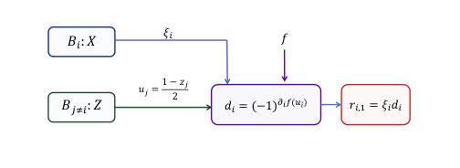
<figcaption class="paper-figure-caption"><b>Fig 1.</b> FIG. 1. Boolean-derivative scoring for the ith Bell term. Party Bi measures X, while the remaining Bj parties measure Z. The latter outcomes are mapped to bits uj = (1 −zj)/2, from which the verifier evaluates the derivative sign di = (−1)∂if(u¯i). Combining this sign with the X-measurement outcome ξi gives the postprocessed output ri,1 = ξidi.</figcaption>
</figure>
<figure class="paper-figure-card">
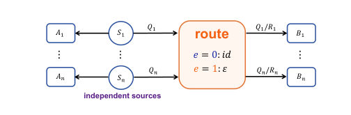
<figcaption class="paper-figure-caption"><b>Fig 2.</b> FIG. 2. Independent-source network for gate certification. Each source Si distributes systems to the reference party Ai and to the channel input Qi. For e = 0, the Qi systems are routed directly to the Bi stations, whereas for e = 1 they pass through the physical channel E, producing output systems Ri. The route choice e is not supplied to the reference parties.</figcaption>
</figure>
<figure class="paper-figure-card">
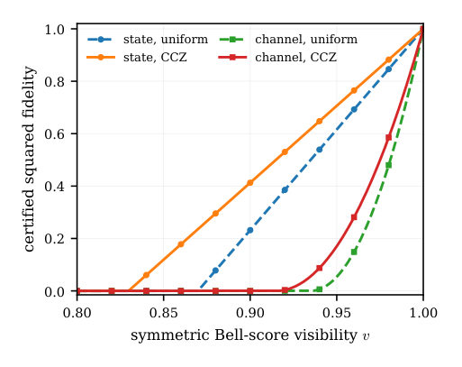
<figcaption class="paper-figure-caption"><b>Fig 3.</b> FIG. 3. Comparison of the uniform Boolean-phase and CCZ-specific fidelity bounds in the symmetric two-route score model. The upper curves show the squared Choi-state fidelity obtained from a single state test, while the lower curves show the squared Choi fidelity of the effective channel obtained by composing the input and output certificates. Dashed curves use the uniform coefficient cZ, and solid curves use the im- proved CCZ coefficient cCCZ. The CCZ analysis lowers the nontrivial state-fidelity threshold from 0.869825 to 0.829681 and the channel-fidelity threshold from 0.934913 to 0.914840, without changing the Bell expression or measurement set- tings.</figcaption>
</figure>
</div>

<p><strong>Summary.</strong> This paper presents a robust, device-independent method to certify the fidelity of Boolean-phase quantum gates. It achieves this by transforming the gate's phase dependence into classical constraints evaluated via Bell inequalities using only local measurements. The resulting fidelity bound is explicit and uniform over all Boolean functions, providing a powerful tool for quantum device characterization.</p>
<p><strong>Why it may be interesting.</strong> The technique of translating gate-specific quantum information into classical constraints on local measurements is highly generalizable and provides a powerful tool for verifying quantum hardware fidelity in a resource-efficient manner.</p>
<details>
<summary>Detailed structure</summary>
<p><strong>Main problem.</strong> The paper develops a robust, device-independent certification scheme for Boolean-phase gates, addressing the issue that self-testing the output Choi state alone is insufficient.</p>
<p><strong>Main result.</strong> They derive a closed-form Choi-fidelity bound for an effective n-qubit channel by combining an identity test and a gate-output test in an independent-source network.</p>
<p><strong>Method.</strong> The core method involves using Boolean differentiation to convert gate-dependent phase information into classical signs, which are then evaluated using Bell tests built from CHSH blocks with only local measurements.</p>
<p><strong>Model / system.</strong> The system under study is the Boolean-phase gate, defined by a Boolean function f on n qubits, represented as a diagonal unitary matrix. The certification is performed using an independent-source network structure.</p>
<p><strong>Key observables.</strong> The normalized Choi state, the Bell expression $B_f$, and the extracted-state squared fidelity $F^2(
ho_{	ext{ext}}, |\Psi_f
angle\langle\Psi_f|)$.</p>
<p><strong>Important parameters / regimes.</strong> The Bell deficit $\epsilon$, which quantifies the deviation from maximal violation, and the number of qubits $n$.</p>
<p><strong>Assumptions / limitations.</strong> The analysis assumes the ability to combine an identity test and a gate-output test using the same physical observables, and that the B-side extraction preserves every physical Z-measurement exactly.</p>
<p><strong>Figures summary.</strong> Figure 1 illustrates the Boolean-derivative scoring for a Bell term, mapping outcomes to bits and the derivative sign. Figure 2 illustrates the independent-source network structure used for the combined test.</p>
<p><strong>Paper structure.</strong> The paper first introduces the problem and the Boolean-derivative technique. It then establishes self-testing bounds (Theorem 1) and derives a robust fidelity bound (Theorem 2) using an independent-source network. Finally, it applies this framework to the CCZ gate using a joint six-party analysis.</p>
</details>
<details>
<summary>Abstract</summary>
<p>Device-independent certification of a quantum gate requires the input and output tests to identify the same reference qubits. Self-testing the output Choi state alone does not guarantee this consistency. We develop a robust certification scheme for Boolean-phase gates, a broad family of computational-basis diagonal gates specified by Boolean functions. Boolean derivatives convert the target-dependent phase information into classical signs that can be evaluated from local measurement outcomes. This leads to Bell tests built from CHSH blocks using two binary measurements per party and no entangling measurements. At maximal violation, the tests self-test the normalized Choi state and the measured observables. Away from the maximum, they give an explicit affine lower bound on the extracted-state squared fidelity that is uniform over all Boolean functions and valid in arbitrary local dimensions. We then combine an identity test and a gate-output test in an independent-source network in which the reference devices use the same physical observables, obtaining a closed-form Choi-fidelity bound for an effective \(n\)-qubit channel. For CCZ, a joint six-party analysis gives a stronger robustness bound without changing the Bell expression or measurement settings. The construction shows how the algebraic structure of a gate can shift target-dependent information from quantum measurement design to classical processing of local outcomes.</p>
</details>
<p><sub><a href="#top">↑ back to top</a></sub></p>

<p><a id="paper-2609.09804"></a></p>
<h3 id="small-bias-quantum-approximate-counting-via-the-multiplicative-adversary-method"><a href="http://arxiv.org/abs/2609.09804v1">Small-Bias Quantum Approximate Counting via the Multiplicative Adversary Method</a></h3>
<p><strong>Authors:</strong> Albert Lin, Han-Hsuan Lin<br>
<strong>Type:</strong> theory · <strong>Category:</strong> quantum information and computing · <strong>PDF:</strong> <a href="https://arxiv.org/pdf/2609.09804v1">https://arxiv.org/pdf/2609.09804v1</a><br>
<strong>Analysis basis:</strong> full PDF text, analyzed in chunks
<strong>Topic relevance:</strong> <code>quantum measurements</code> <strong>2/5</strong></p>
<div class="figure-strip-hint">↔ Scroll figures horizontally</div>
<div class="paper-figures-scroll">
<figure class="paper-figure-card">
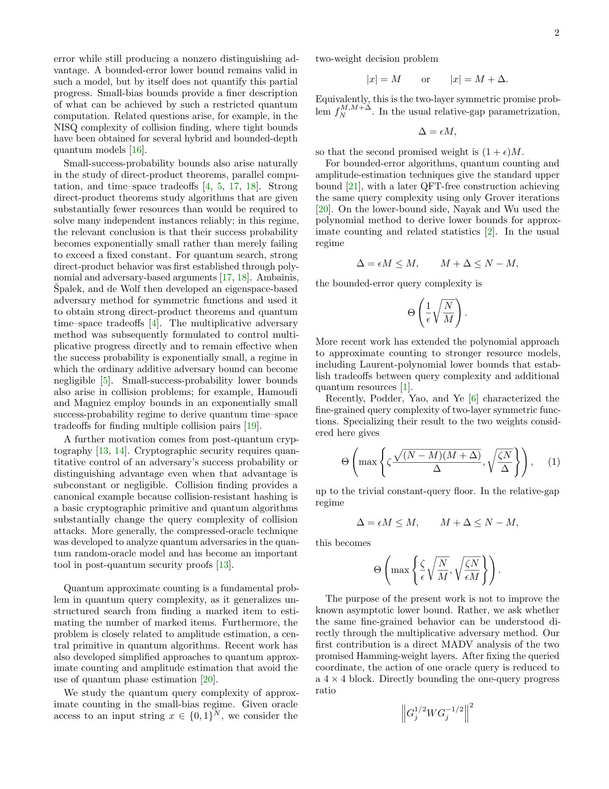
<figcaption class="paper-figure-caption"><b>Fig 1.</b> Low-resolution page preview, page 2</figcaption>
</figure>
<figure class="paper-figure-card">

<figcaption class="paper-figure-caption"><b>Fig 2.</b> Low-resolution page preview, page 3</figcaption>
</figure>
<figure class="paper-figure-card">

<figcaption class="paper-figure-caption"><b>Fig 3.</b> Low-resolution page preview, page 4</figcaption>
</figure>
<figure class="paper-figure-card">

<figcaption class="paper-figure-caption"><b>Fig 4.</b> Low-resolution page preview, page 5</figcaption>
</figure>
<figure class="paper-figure-card">

<figcaption class="paper-figure-caption"><b>Fig 5.</b> Low-resolution page preview, page 6</figcaption>
</figure>
</div>

<p><strong>Summary.</strong> This paper derives lower bounds for the quantum query complexity required to distinguish between two specific Hamming weights ($M$ vs $M+\Delta$) in the small-bias regime. It achieves this by employing the Multiplicative Adversary Method (MADV) and reducing the problem to the Unique OR problem. The resulting bound provides a fine-grained understanding of the computational difficulty for these quantum counting tasks.</p>
<p><strong>Why it may be interesting.</strong> While focused on query complexity, the rigorous application of the multiplicative adversary method to derive fine-grained bounds provides powerful theoretical tools applicable to understanding the limits of quantum information processing protocols.</p>
<details>
<summary>Detailed structure</summary>
<p><strong>Main problem.</strong> The paper studies the quantum query complexity of distinguishing between two specific Hamming weights ($M$ vs $M+\Delta$) in the small-bias regime ($    ext{success probability} = 1/2 + \zeta$).</p>
<p><strong>Main result.</strong> It establishes a lower bound for the required number of queries, $Q$, which is $\Omega\left( \max \left( rac{\zeta}{p} rac{(N-M)(M+\Delta)}{\Delta}, rac{r}{\zeta} rac{N}{\Delta}!
ight) 
ight)$.</p>
<p><strong>Method.</strong> The primary technique is the Multiplicative Adversary Method (MADV), which is applied to the counting problem and reduced from the Unique OR problem.</p>
<p><strong>Model / system.</strong> The analysis is performed in the abstract quantum query model, involving oracles that probe the Hamming weight of an input string $x \in \{0,1\}^N$. The structure involves relating subspaces corresponding to different Hamming weights.</p>
<p><strong>Key observables.</strong> The success probability advantage $\zeta$, the query complexity $Q$, and the coherence measure $eta_T$ are key observables.</p>
<p><strong>Important parameters / regimes.</strong> The total number of bits $N$, the two weights $M$ and $M+\Delta$, and the difference $\Delta$ are crucial parameters.</p>
<p><strong>Assumptions / limitations.</strong> The analysis assumes the condition $M + \Delta \le N - M$ for the reduction steps to hold simply.</p>
<p><strong>Paper structure.</strong> The paper develops the lower bound by first analyzing the Unique OR problem using MADV, then reducing the two-weight counting problem to Unique OR, and finally combining these results to state the main, fine-grained lower bound.</p>
</details>
<details>
<summary>Abstract</summary>
<p>We study the two-weight decision version of quantum approximate counting: given oracle access to $x\in\{0,1\}^N$, distinguish $|x|=M$ from $|x|=M+Δ$ with success probability $1/2+ζ$. Using the multiplicative adversary method, we prove $Ω\left(\max\left\{ζ\sqrt{(N-M)(M+Δ)}/Δ,\sqrt{ζN/Δ}\right\}\right)$. The same parameter dependence follows from the polynomial-method characterization of the two-layer symmetric function by Podder, Yao, and Ye. Our contribution is a multiplicative-adversary derivation that tracks the progress produced by individual oracle queries. For the first term, after complementing the input if necessary, we assume $M+Δ\le N-M$. We use the Hamming-layer subspaces from the eigenspace method of Ambainis, Spalek, and de Wolf and compose their adjacent-layer unitary maps to relate the two nonadjacent promise layers. After fixing the queried coordinate, the analysis block-diagonalizes into four-dimensional subspaces. An exact calculation of the one-query progress ratio gives the first lower bound. The same estimate also implies $\left\|(I-\widehatΠ_{\mathrm{bad}})\lvertΨ^T\rangle\right\|^2=O\left(T^2Δ^2/((N-M)(M+Δ))\right)$ for the coherent input superposition used in the adversary argument. For the second term, we prove directly using a three-eigenvalue multiplicative adversary that unique OR on $n$ bits with success probability $1/2+ζ$ requires $Ω(\sqrt{ζn})$ queries, and then reduce unique OR to the two-weight counting problem.</p>
</details>
<p><sub><a href="#top">↑ back to top</a></sub></p>

<p><a id="paper-2609.09545"></a></p>
<h3 id="sub-extensive-non-stabilizerness-in-the-dyck-fredkin-spin-chain"><a href="http://arxiv.org/abs/2609.09545v1">Sub-extensive non-stabilizerness in the Dyck-Fredkin spin chain</a></h3>
<p><strong>Authors:</strong> Yasunori Lee<br>
<strong>Type:</strong> theory · <strong>Category:</strong> statistical mechanics · <strong>PDF:</strong> <a href="https://arxiv.org/pdf/2609.09545v1">https://arxiv.org/pdf/2609.09545v1</a><br>
<strong>Analysis basis:</strong> full PDF text, analyzed in chunks
<strong>Topic relevance:</strong> <code>analog quantum simulation</code> <strong>2/5</strong></p>
<div class="figure-strip-hint">↔ Scroll figures horizontally</div>
<div class="paper-figures-scroll">
<figure class="paper-figure-card">
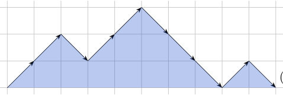
<figcaption class="paper-figure-caption"><b>Fig 1.</b> Figure 1: An example of a Dyck path for N = 10 and the corresponding spin/qubit configuration.</figcaption>
</figure>
<figure class="paper-figure-card">
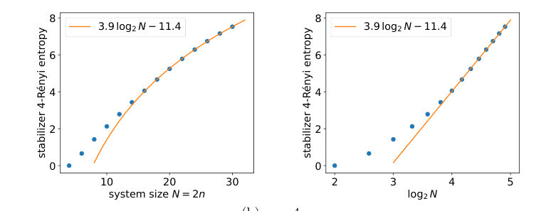
<figcaption class="paper-figure-caption"><b>Fig 2.</b> Figure 2: Stabilizer α-Rényi entropy Mα(|ψDF 0 (1)⟩) of the ground state of the (undeformed) Dyck-</figcaption>
</figure>
<figure class="paper-figure-card">
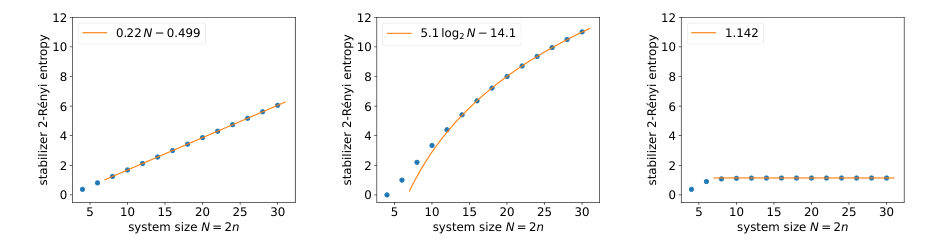
<figcaption class="paper-figure-caption"><b>Fig 3.</b> Figure 3: Stabilizer 2-Rényi entropy M2(|ψDF 0 (t)⟩) of the ground state of the deformed Dyck-</figcaption>
</figure>
</div>

<p><strong>Summary.</strong> This work analyzes the stabilizer Rényi entropy (SRE) of the Dyck-Fredkin spin chain under a deformation parameter $t$. The SRE reveals three distinct scaling regimes—linear, logarithmic, and constant—depending on $t$. This demonstrates that non-stabilizerness can serve as a sensitive diagnostic tool, potentially offering new insights into quantum many-body criticality compared to entanglement entropy.</p>
<p><strong>Why it may be interesting.</strong> The clear distinction in scaling behavior ($\Theta(N)$ vs $\Theta(\log N)$ vs $\Theta(1)$) based on a simple parameter $t$ provides a powerful, quantifiable tool to characterize different types of quantum criticality beyond standard entanglement measures.</p>
<details>
<summary>Detailed structure</summary>
<p><strong>Main problem.</strong> The study investigates the scaling behavior of non-stabilizerness, quantified by the stabilizer Rényi entropy (SRE), in quantum many-body systems to probe their critical properties.</p>
<p><strong>Main result.</strong> The SRE exhibits distinct scaling behaviors ($\Theta(N)$, $\Theta(\log N)$, or $\Theta(1)$) depending on the deformation parameter $t$, suggesting non-stabilizerness offers a unique diagnostic tool distinct from entanglement entropy.</p>
<p><strong>Method.</strong> The authors employ numerically exact finite-size calculations and asymptotic analysis on the SRE, which is derived from the ground state of the spin chain.</p>
<p><strong>Model / system.</strong> The system analyzed is the spin-1/2 Dyck-Fredkin chain and its $t$-deformation, a local frustration-free model whose ground state is a weighted superposition of Dyck-path states.</p>
<p><strong>Key observables.</strong> Stabilizer Rényi entropy ($\alpha$-SRE), entanglement entropy, and the spectral gap.</p>
<p><strong>Important parameters / regimes.</strong> The deformation parameter $t$, which dictates three distinct scaling regimes: $t<1$, $t=1$, and $t>1$.</p>
<p><strong>Assumptions / limitations.</strong> The analysis relies on exploiting the combinatorial structure of the ground state and performing asymptotic approximations for the normalization factor $C(t)$.</p>
<p><strong>Figures summary.</strong> Figure 2 shows the $\alpha$-SRE scaling for the undeformed chain ($\log N$ scaling). Figure 3 illustrates the three distinct scaling regimes ($t<1$, $t=1$, $t>1$) for the deformed chain.</p>
<p><strong>Paper structure.</strong> The paper introduces the SRE as a measure of non-stabilizerness, derives the necessary formulas using replica methods, and then performs numerical and asymptotic calculations to map the scaling behavior across the parameter $t$.</p>
</details>
<details>
<summary>Abstract</summary>
<p>The stabilizer Rényi entropy is a quantitative measure of non-stabilizerness, or magic, and has typically been found to scale extensively with system size $N$ (i.e., $Θ(N)$) for a variety of many-body quantum states. In this note, we study the stabilizer Rényi entropy of the ground state of the spin-$\frac{1}{2}$ Dyck-Fredkin chain and its $t$-deformation, a local frustration-free model with unusual spectral-gap scaling. Exploiting the combinatorial structure, we carry out numerically exact finite-size calculations, which indicate asymptotic behavior depending on $t$: $Θ(N)$ for $t<1$, $Θ(\log N)$ at $t=1$, and $Θ(1)$ for $t>1$. The scaling at $t=1$ could be another manifestation of the unconventional criticality of the model, while the contrast with the behavior of the entanglement entropy suggests that non-stabilizerness might provide a new window into quantum many-body systems.</p>
</details>
<p><sub><a href="#top">↑ back to top</a></sub></p>

<p><a id="paper-2609.10141"></a></p>
<h3 id="the-sample-complexity-of-quantum-entanglement-allocation"><a href="http://arxiv.org/abs/2609.10141v1">The Sample Complexity of Quantum Entanglement Allocation</a></h3>
<p><strong>Authors:</strong> Nathan Roll<br>
<strong>Type:</strong> both · <strong>Category:</strong> quantum information and computing · <strong>PDF:</strong> <a href="https://arxiv.org/pdf/2609.10141v1">https://arxiv.org/pdf/2609.10141v1</a><br>
<strong>Analysis basis:</strong> full PDF text, analyzed in chunks
<strong>Topic relevance:</strong> <code>quantum measurements</code> <strong>2/5</strong></p>
<div class="figure-strip-hint">↔ Scroll figures horizontally</div>
<div class="paper-figures-scroll">
<figure class="paper-figure-card">
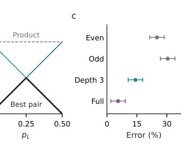
<figcaption class="paper-figure-caption"><b>Fig 1.</b> Figure 1: (a) Three-qubit encodings at request probabilities (1/4, 1/2, 1/4). Groups share en- tanglement; filled squares recover the bit, empty squares are uninformative. All four codes pre- serve the stored bit. (b) Ideal prediction error when π(XXX) = 1/2, π(ZZI) = pL and π(IZZ) = 1/2 −pL; black selects the better pair. (c) Native 15-qubit commissioning on ibm_marrakesh favors the full chain. Even/odd are fixed product allocations. Each mean uses 1,920 shots over all 15 queries and both bits; bars are simultaneous 95% Hoeffding bounds for four means, conditional on independent shots in this one job. The allocations in (c) are fixed before ac- quisition.</figcaption>
</figure>
<figure class="paper-figure-card">

<figcaption class="paper-figure-caption"><b>Fig 2.</b> Figure 2: Depth changes the error scale as well as the request requirement. (a) On the budget- indexed hard family, both empirical and data-free periodic allocations follow a square-root rate. The task probabilities change with the budget. (b) On fixed Dirichlet workloads, only the empirical learner improves. Solid lines show empirical optima; dotted lines show uniform periodic allocations. Each line averages four dimension means, each based on 64 independent seeds; shading spans those dimension means, not confidence intervals. The dashed line is 0.025x−1/2, an unfitted slope guide, not a theorem constant. Every risk uses the exact same-depth physical optimum as comparator.</figcaption>
</figure>
<figure class="paper-figure-card">

<figcaption class="paper-figure-caption"><b>Fig 3.</b> Figure 3: More requests cannot remove a calibration floor. (a) Request learning at three fixed calibration budgets; the dashed curve supplies the true channel. (b) Calibration learning at three fixed request budgets; the dashed curve supplies the true workload. Both panels use 63-qubit heterogeneous-noise instances and the smoothed Joint estimator. Excess is relative to the true- workload, true-channel oracle in the same circuit family. Bands are pointwise 95% bootstrap inter- vals over 32 independent instances, after averaging four request streams and four calibration panels. Calibration costs 125B observations, separately from m.</figcaption>
</figure>
<figure class="paper-figure-card">

<figcaption class="paper-figure-caption"><b>Fig 4.</b> Figure 4: (a) Fresh random requests and chosen repair queries have different call costs. Points reproduce Bell coverage q = .8 from a product probe. (b) Cost comparison at 80% power and 5% false alarms for known (e0, e1) = (.02, .164). GHZ uses 18 calls and 111.6 logical CNOTs; a product-initialized repeated-query policy uses 19.6 expected calls and 75.6 CNOTs. The boundary includes extra GHZ startup cost per episode. These are two attaining policies, not the full adaptive frontier.</figcaption>
</figure>
<figure class="paper-figure-card">

<figcaption class="paper-figure-caption"><b>Fig 5.</b> Figure 5: (a) Exact empirical co-location on structured tables, with requests scaled by rk. Curves average r ∈{1, 4} and k ∈{1, 2, 3}, with 32 instances per cell; bands bootstrap training instances. (b) Complete-basket locality on the public Online Retail trace, with 3,922 records and eight shards of capacity 512. Learned methods share a training prefix; fixed key range uses none. Bands bootstrap 16 request streams conditional on the fixed catalogue and test trace. All three capacities and the exact small-schema study appear in Appendix Q.</figcaption>
</figure>
</div>

<p><strong>Summary.</strong> This work develops theoretical bounds on how much historical data (sample complexity) is needed to optimally allocate quantum entanglement resources. It analyzes the problem using quantum information theory, deriving specific error scaling laws for different graph structures. The findings are relevant for understanding the practical limits of quantum computation in resource-constrained environments.</p>
<p><strong>Why it may be interesting.</strong> The rigorous analysis of resource allocation and sample complexity in quantum settings provides theoretical tools for understanding the limits of quantum machine learning and resource management.</p>
<details>
<summary>Detailed structure</summary>
<p><strong>Main problem.</strong> The paper investigates the sample complexity required to optimally allocate quantum entanglement resources among qubits based on sequential query history.</p>
<p><strong>Main result.</strong> The required sample complexity depends on the specific allocation choices, and the excess error for path-like structures scales according to a derived minimax bound.</p>
<p><strong>Method.</strong> The authors use information-theoretic techniques, characterizing attainable prediction-contrast regions via convex hulls and deriving concentration bounds for learning from i.i.d. queries.</p>
<p><strong>Model / system.</strong> The model involves a quantum memory storing a classical bit, queried by commuting Pauli operators (X- and Z-type), and is analyzed using graph-state structures like paths and bicliques.</p>
<p><strong>Key observables.</strong> Minimax excess error, prediction-contrast, and the required sample size ($m$).</p>
<p><strong>Important parameters / regimes.</strong> Number of qubits ($d$), entanglement budget ($k$), number of requests ($m$), and calibration trials ($B$).</p>
<p><strong>Assumptions / limitations.</strong> The detector is assumed to preserve coherence within measured sectors, and initial analyses rely on independent, commuting Pauli generators.</p>
<p><strong>Figures summary.</strong> Figures illustrate encoding schemes, prediction error vs. best pair choice, and comparisons of locality performance across different data structures (e.g., full chain vs. basket search).</p>
<p><strong>Paper structure.</strong> The paper progresses from characterizing the fundamental sample complexity for Pauli queries to deriving specific error bounds for paths and general graphs, and finally applying these concepts to structured data and hardware testing.</p>
</details>
<details>
<summary>Abstract</summary>
<p>How many past requests are needed to decide which qubits should share entanglement? We show that the answer depends on the allocation choices created by the queries: a larger memory can require no more data. The memory stores a classical bit and answers requests through a fixed detector that preserves coherence within each measured sector. For independent commuting $X$- and $Z$-type Pauli queries, we characterize the full attainable prediction-contrast region and construct encodings that preserve the bit at every nonzero vertex. With sharp reports, a $d$-qubit path and groups of at most $k$ qubits have minimax excess error after $m$ requests proportional to $k^{-1}\min\{1,\sqrt{d\log(k+1)/m}\}$, uniformly for $2\leq k<d$. Connected biclique regions can grow without increasing sample demand when depth, region count and connections per region stay bounded. Preparation noise introduces a separate calibration requirement. We derive an exact tradeoff with extra fresh detector calls and transfer the learning law to structured transaction co-location. Population-risk experiments test the statistical predictions. We also compare encodings on a native 15-qubit device and learned partitions on public purchase baskets. The full chain wins on the device; frequency grouping outperforms basket search in the largest-capacity retail setting.</p>
</details>
<p><sub><a href="#top">↑ back to top</a></sub></p>

<p><a id="paper-2609.10162"></a></p>
<h3 id="unbounded-degree-overhead-for-alice-conditioned-quantum-bell-certificates"><a href="http://arxiv.org/abs/2609.10162v1">Unbounded degree overhead for Alice-conditioned quantum Bell certificates</a></h3>
<p><strong>Authors:</strong> Fumin Wang<br>
<strong>Type:</strong> theory · <strong>Category:</strong> quantum information and computing · <strong>PDF:</strong> <a href="https://arxiv.org/pdf/2609.10162v1">https://arxiv.org/pdf/2609.10162v1</a><br>
<strong>Analysis basis:</strong> full PDF text, analyzed in chunks
<strong>Topic relevance:</strong> <code>quantum measurements</code> <strong>2/5</strong></p>
<div class="figure-strip-hint">↔ Scroll figures horizontally</div>
<div class="paper-figures-scroll">
<figure class="paper-figure-card">
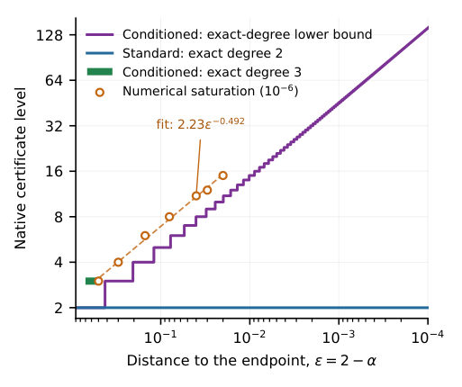
<figcaption class="paper-figure-caption"><b>Fig 1.</b> FIG. 1. Unbounded cost of restricting certificate structure. The purple staircase is the proved lower bound dos ≥k + 1 whenever 0 &lt; ϵ &lt; tk. It bounds the exact conditioned degree. Orange points show numerical saturation within 10−6, a distinct finite-tolerance quantity; they do not certify exact closure. Standard degree remains two. The green segment marks the separately proved interval where conditioned degree is exactly three. Both axes are logarithmic. The SM reports solver residuals and the sensitivity of the numerical points.</figcaption>
</figure>
<figure class="paper-figure-card">

<figcaption class="paper-figure-caption"><b>Fig 2.</b> FIG. 2. Deficit in the conditional min-entropy certified by Alice-conditioned level two: log2[Gos 2 (s)/GQ(s)]. Strict positiv- ity throughout the displayed interval follows from Theorem 3; the dashed curve is numerical. The arrow at s = 2.3 marks the exact lower bound 10−3 bits, not the optimum of the relaxation. Standard level two and conditioned level three certify the exact quantum tradeoff throughout this interval.</figcaption>
</figure>
<figure class="paper-figure-card">
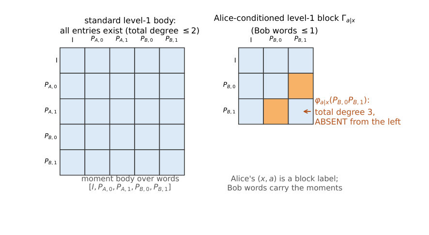
<figcaption class="paper-figure-caption"><b>Fig 3.</b> Figure 1: The level-one filtration obstruction (Remark 2.6). Left: the standard level-one moment body contains moments of total degree at most two. Right: an Alice-conditioned level-one block Γa|x, indexed by Bob words of length at most one, contains the corner moments φa|x(PB,0PB,1) — total degree three once the Alice label is counted — which the standard level-one body cannot supply.</figcaption>
</figure>
<figure class="paper-figure-card">
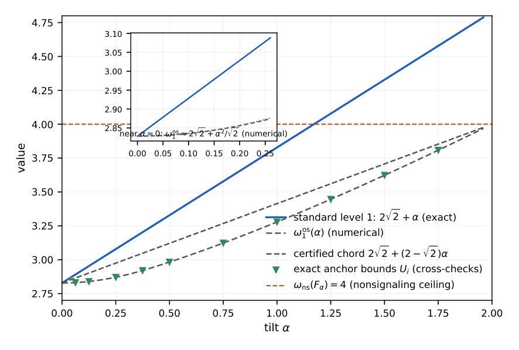
<figcaption class="paper-figure-caption"><b>Fig 4.</b> Figure 2: Level-one separation of tilted CHSH (Theorems 3.4 and 3.7). The standard level-one value is exactly 2 √</figcaption>
</figure>
<figure class="paper-figure-card">

<figcaption class="paper-figure-caption"><b>Fig 5.</b> Figure 3: Exact quantum-bound certification. Orange diamonds are exact level-two closure points. The separate green strip marks an interval of exact level-three closure; it is not plotted on the level-two gap axis. The blue open interval shows the finite witness fan at level two; section 8 additionally extends non-closure to every α ∈(α−, 2). Dashed curves and the candidate boundary near 1.28427 are numerical; the existence of a unique transition is not proved.</figcaption>
</figure>
</div>

<p><strong>Summary.</strong> This paper rigorously analyzes the resource cost associated with certifying quantum Bell inequalities when the certification process is conditioned on a single measurement choice by Alice. It proves that this conditioning introduces an unbounded overhead in the required degree of the polynomial certificate compared to standard methods. The findings help separate the computational resources needed for different structural assumptions in quantum information theory.</p>
<p><strong>Why it may be interesting.</strong> This work provides rigorous mathematical tools to quantify the computational complexity of verifying quantum nonlocality, which is fundamental to quantum information theory and device-independent security protocols.</p>
<details>
<summary>Detailed structure</summary>
<p><strong>Main problem.</strong> The paper investigates the additional degree overhead required when certifying quantum Bell inequalities using certificates conditioned on a single measurement choice by Alice.</p>
<p><strong>Main result.</strong> It proves that the required conditioned certification level grows unboundedly as the system approaches certain limits, separating the resource requirements of single-question conditioning from standard SOS degree bounds.</p>
<p><strong>Method.</strong> The authors use Semidefinite Programming (SDP) relaxations formulated as Sum-of-Squares (SOS) polynomials, constructing explicit counterexamples using truncated positive functionals on the infinite dihedral group.</p>
<p><strong>Model / system.</strong> The analysis focuses on quantum Bell inequalities, specifically the CHSH inequality, analyzed through the Navascués–Pironio–Acín (NPA) hierarchy and its specialized Alice-conditioned variants.</p>
<p><strong>Key observables.</strong> The primary observables are the SDP values ($\omega_{std}^k$ vs. $\omega_{os}^k$) for standard and Alice-conditioned Bell certificates, and the resulting quantum-bound curve $\alpha(u)$.</p>
<p><strong>Important parameters / regimes.</strong> Key parameters include the conditioning parameter $\alpha$, the certificate level $k$, and the distance $\epsilon$ to the endpoint tilt.</p>
<p><strong>Assumptions / limitations.</strong> The analysis relies on comparing the required degree for exact certification against the standard degree, and distinguishing between exact closure and finite-tolerance numerical saturation.</p>
<p><strong>Figures summary.</strong> Figure 1 illustrates the unbounded cost, showing the required conditioned degree diverging from the standard degree as the distance to the endpoint decreases.</p>
<p><strong>Paper structure.</strong> The paper develops results by first showing the unbounded overhead (Theorem 1), then establishing continuous exact certification over an interval (Theorem 2), and finally refuting conjectures about fixed-level containment (Theorem 8.2).</p>
</details>
<details>
<summary>Abstract</summary>
<p>Requiring each sum-of-squares term to involve only one of Alice's measurement questions can impose an unbounded certification cost. In the simplest Bell scenario, we prove that no finite level of the Alice-conditioned NPA hierarchy contains all standard level-two Bell certificates. An explicit family of truncated positive functionals on the infinite dihedral group exceeds the tilted-CHSH quantum bound at every prescribed finite level, while a standard degree-two certificate is exact. A Fejer-weighted trace reduces positivity to a rank-one subtraction from a moving-average Gram matrix. The required conditioned level grows at least as $(2-α)^{-1/2}$ near the endpoint tilt. This bounds the degree of exact nice-SOS inputs to compiled-game soundness proofs. Consequently, no finite conditioned level certifies the entire optimal CHSH randomness tradeoff against quantum side information, although standard level two does. Away from the endpoint, we prove a sharp one-level cost throughout $α\in[13/10,3/2]$, using optimal-strategy kernels and exact Bernstein matrix positivity to certify a continuous interval. The results separate ordinary SOS degree from the resources keyed by single-question certificate structure.</p>
</details>
<p><sub><a href="#top">↑ back to top</a></sub></p>

<p><a id="paper-2609.10533"></a></p>
<h3 id="noether-symmetries-generate-deterministic-energy-harvesting-protocols"><a href="http://arxiv.org/abs/2609.10533v1">Noether Symmetries Generate Deterministic Energy-Harvesting Protocols</a></h3>
<p><strong>Authors:</strong> Ali Akil, M. Hamed Mohammady, Zihan Wang, Oscar Dahlsten<br>
<strong>Type:</strong> theory · <strong>Category:</strong> other · <strong>PDF:</strong> <a href="https://arxiv.org/pdf/2609.10533v1">https://arxiv.org/pdf/2609.10533v1</a><br>
<strong>Analysis basis:</strong> full PDF text, analyzed in chunks
<strong>Topic relevance:</strong> <code>Keldysh / 2PI / non-Gaussian methods</code> <strong>1/5</strong> · <code>analog quantum simulation</code> <strong>1/5</strong> · <code>correlated / nonlocal dissipation</code> <strong>1/5</strong> · <code>driven-dissipative phase transition</code> <strong>1/5</strong> · <code>methods for driven-dissipative</code> <strong>1/5</strong> · <code>non-equilibrium universality</code> <strong>1/5</strong> · <code>quantum measurements</code> <strong>1/5</strong></p>
<div class="figure-strip-hint">↔ Scroll figures horizontally</div>
<div class="paper-figures-scroll">
<figure class="paper-figure-card">

<figcaption class="paper-figure-caption"><b>Fig 1.</b> FIG. 1: Noether symmetry R generates orbits over different source states that jointly achieve DEH. The points in the figure depict source-harvester states, which undergo evolutions R or U. R = Rh ⊗Rs has two properties (i) Noether symmetry: R†UR = U, (ii) Leaves harvester energy eigenstates invariant: R |g/e⟩h |ψ⟩s = |g/e⟩h |ψ′⟩s. Suppose |ψ0⟩s achieves DEH such that U |g⟩h |ψ0⟩s = |e⟩h |ϕ⟩s. As depicted, if another ini- tial source state differs only by R, and is in that sense on the same orbit Os as |ψ0⟩s, after U being applied the harvester is also then in state |e⟩h: UR |g⟩h |ψ0⟩s = RU |g⟩h |ψ0⟩s = |e⟩h |ϕ′⟩s.</figcaption>
</figure>
<figure class="paper-figure-card">

<figcaption class="paper-figure-caption"><b>Fig 2.</b> FIG. 2: Non-Abelian DEH protocol with con- served total angular momentum. A five-level har- vester is coupled to a source of five spin-1/2 particles through the interaction Hamiltonian in Eq. (14). The horizontal axis shows the dimensionless time Ωe t, where Ωe is the harvester transition frequency between |g⟩h and |e⟩h; equivalently, Ee −Eg = ℏΩe. The curves show the ground-state, auxiliary-level, and excited-state popula- tions Pg, Pa, and Pe, respectively. The solid Pe curve corresponds to the unrotated source state (α, β, γ) = (0, 0, 0), while the circles, triangles, and squares repre- sent three globally SU(2)-rotated source states with Euler angles specified in the legend. Their...</figcaption>
</figure>
<figure class="paper-figure-card">
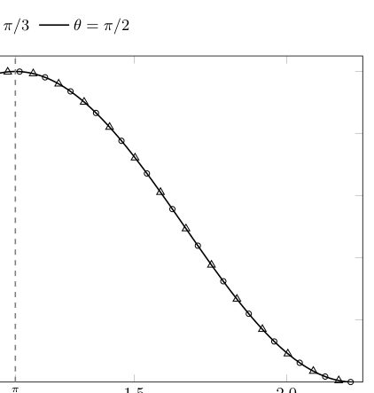
<figcaption class="paper-figure-caption"><b>Fig 3.</b> FIG. 1. Three spin XX chain example.</figcaption>
</figure>
<figure class="paper-figure-card">

<figcaption class="paper-figure-caption"><b>Fig 4.</b> FIG. 2. Non-abelian DEH example. There is a 5 dimensional harvester and a 25-dimensional source.</figcaption>
</figure>
<figure class="paper-figure-card">

<figcaption class="paper-figure-caption"><b>Fig 5.</b> FIG. 3. Classical deterministic energy harvesting. (a) Normalized harvester energy gain for different initial phases ϕ0 of the classical source field. All phase-dependent results coincide and reach unity at the common transfer time T, indicated by the vertical dashed line. (b) Corresponding energy partitioning for a representative initial phase. The harvester energy gain equals the source energy loss, while the interaction energy remains zero along the selected seed source state trajectory.</figcaption>
</figure>
</div>

<p><strong>Summary.</strong> This paper develops a general theory showing that deterministic energy harvesting (DEH) is governed by the symmetries of the source-harvester system. By applying Noether's theorem, the authors prove that a single symmetry can generate an infinite family of source states, all capable of performing the exact same energy transfer. This establishes a fundamental, symmetry-protected principle for quantum energy extraction.</p>
<p><strong>Why it may be interesting.</strong> This work provides a powerful, fundamental constraint (symmetry protection) on non-equilibrium quantum processes like energy harvesting, connecting deep mathematical principles (Noether's theorem) to practical quantum engineering problems.</p>
<details>
<summary>Detailed structure</summary>
<p><strong>Main problem.</strong> The paper seeks to determine the general theoretical conditions under which deterministic energy harvesting (DEH) is possible from fluctuating quantum sources.</p>
<p><strong>Main result.</strong> It establishes that Noether's theorem provides a general principle: a continuous symmetry of the joint source-harvester dynamics guarantees that an entire orbit of source states can perform the same deterministic energy transfer.</p>
<p><strong>Method.</strong> The authors employ Noether's theorem to link continuous symmetries (and conserved charges) to the existence of multiple source states that yield identical, deterministic energy transfer outcomes on the harvester.</p>
<p><strong>Model / system.</strong> The system involves a coupled quantum source and harvester described by a Hamiltonian $H = H_h + H_s + H_{int}$. The analysis is generalized to include classical and phase-space dynamics.</p>
<p><strong>Key observables.</strong> Deterministic energy transfer ($
ho_i^h  o 
ho_f^h$), source asymmetry ($I(\sigma)$), and the conserved Noether charges ($Q_\alpha$).</p>
<p><strong>Important parameters / regimes.</strong> The time evolution $    au$, the symmetry generators $R(g)$, and the source asymmetry $I(\sigma)$.</p>
<p><strong>Assumptions / limitations.</strong> The primary assumptions for the main theorem are the existence of an exact Noether symmetry for the joint dynamics and the exact invariance of the harvester boundary states under this symmetry.</p>
<p><strong>Figures summary.</strong> Figures illustrate how Noether symmetry generates orbits of source states that jointly achieve DEH, and show population dynamics for non-Abelian DEH protocols.</p>
<p><strong>Paper structure.</strong> The paper progresses from defining DEH and identifying the role of symmetries, proving the main theorem using Noether's theorem, illustrating the concept with specific models (Jaynes-Cummings, XX chain), and finally generalizing the findings to other physical theories.</p>
</details>
<details>
<summary>Abstract</summary>
<p>We consider the general principles for when deterministic energy harvesting (DEH) is possible. DEH means absorbing energy from a fluctuating source without entropy being absorbed. We show that the symmetry structure of the source--harvester dynamics gives a general route beyond existing examples to identify DEH capable source states. Any continuous symmetry with a conserved Noether charge induces a source-side orbit of states that all implement the same deterministic harvester transition, provided the harvester boundary states are symmetry invariant. Consequently, one DEH capable source state with nonzero asymmetry between charge sectors can generate infinitely many simultaneously DEH capable source states. A Jaynes-Cummings model, a three-spin XX chain, and an SU(2) model illustrate the construction. We further extend Noether's theorem to generalised probabilistic theories and thereby generalise our main result. We further establish an asymmetry bound for harvesting, showing that source asymmetry cannot increase on average, while DEH saturates the bound exactly preserving asymmetry.</p>
</details>
<p><sub><a href="#top">↑ back to top</a></sub></p>

<p><a id="paper-2609.10470"></a></p>
<h3 id="symmetry-structure-dependent-diagnostic-of-the-quantum-mpemba-effect"><a href="http://arxiv.org/abs/2609.10470v1">Symmetry structure dependent diagnostic of the Quantum Mpemba Effect</a></h3>
<p><strong>Authors:</strong> Tamizhselvan S, Manju C, Bijay Kumar Agarwalla, Uma Divakaran<br>
<strong>Type:</strong> theory · <strong>Category:</strong> statistical mechanics · <strong>PDF:</strong> <a href="https://arxiv.org/pdf/2609.10470v1">https://arxiv.org/pdf/2609.10470v1</a><br>
<strong>Analysis basis:</strong> full PDF text, analyzed in chunks
<strong>Topic relevance:</strong> <code>analog quantum simulation</code> <strong>1/5</strong> · <code>correlated / nonlocal dissipation</code> <strong>1/5</strong> · <code>driven-dissipative phase transition</code> <strong>1/5</strong> · <code>methods for driven-dissipative</code> <strong>1/5</strong> · <code>non-equilibrium universality</code> <strong>1/5</strong> · <code>quantum measurements</code> <strong>1/5</strong> · <code>scars &amp; prethermalization</code> <strong>1/5</strong></p>
<div class="figure-strip-hint">↔ Scroll figures horizontally</div>
<div class="paper-figures-scroll">
<figure class="paper-figure-card">
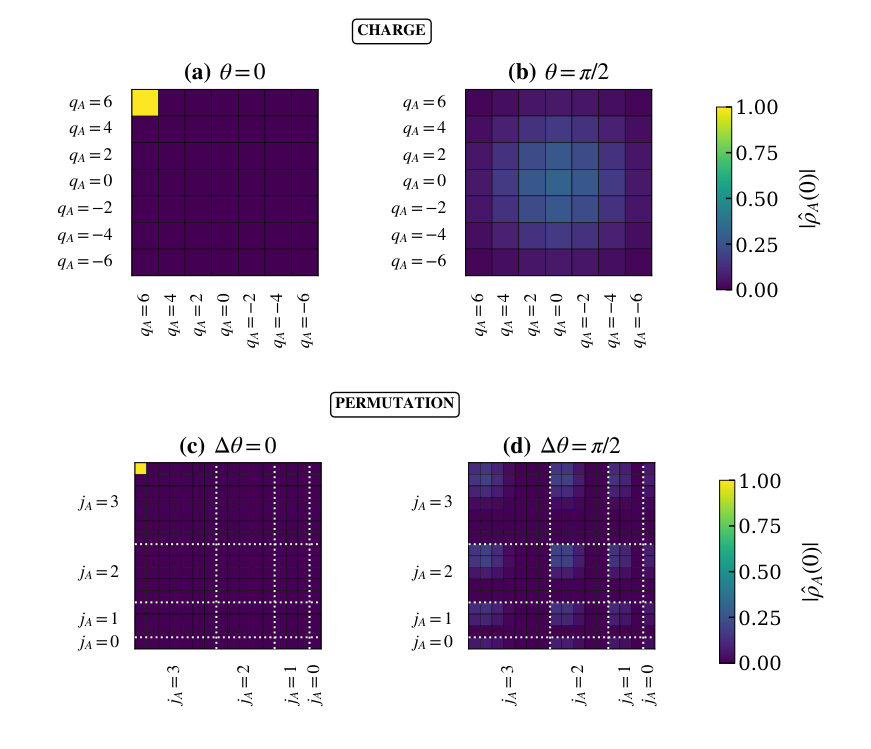
<figcaption class="paper-figure-caption"><b>Fig 1.</b> FIG. 1. Structure of the initial reduced density matrix ˆρA(0) in the symmetry-resolved basis for the charge and permutational- symmetry cases. Panels (a,b) show magnitude of ˆρA(0), denoted as |ˆρA(0)|, in the subsystem-charge qA basis for the tilted ferromagnetic initial state, as given in Eq. (7) with (a) θ = 0, and (b) θ = π/2, respectively, demonstrating support over several qA sectors when θ = π/2 . Panels (c,d) show the corresponding reduced density matrix in the subsystem total-spin jA basis for the initial state given in Eq. (8) with (c) ∆θ = 0 and (d) ∆θ = π/2, respectively, with ∆θ = π/2 showing support and coherences across different jA sectors. These plots correspond to N = 80...</figcaption>
</figure>
<figure class="paper-figure-card">
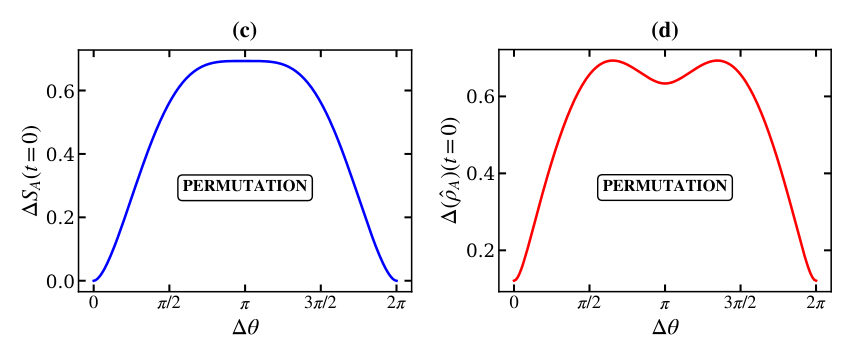
<figcaption class="paper-figure-caption"><b>Fig 2.</b> FIG. 2. Initial values of the entanglement asymmetry ∆SA(t=0) and trace distance ∆(ˆρA)(t=0) for charge and permutation- symmetry-breaking initial states. Panels (a,b) correspond to the charge symmetry-breaking initial state (Eq. (7)), and the diagnostics are plotted as a function of the tilt angle θ. The reduced diagonal ensemble ρA DE is constructed with respect to the charge-symmetric Hamiltonian in Eq. (2) with α = 1/N and p = π/2. Panels (c,d) correspond to the permutational symmetry-breaking initial state in Eq. (8) where the diagnostics are plotted as functions of the polar angle difference ∆θ. Here, ρA DE is constructed with respect to Hamiltonian in Eq. (1), with α1 = 1/N, α2 =...</figcaption>
</figure>
<figure class="paper-figure-card">

<figcaption class="paper-figure-caption"><b>Fig 3.</b> FIG. 3. Charge symmetry-breaking dynamics : (a) Time evolution of the entanglement asymmetry ∆SA(t) and the (b) trace distance ∆(ρA)(t) for charge symmetry case. The three curves correspond to different symmetry-breaking parameters, i.e. initial tilt angle θ. For larger θ, the initial value of both diagnostics is larger but the decay is faster. The results are obtained by exact diagonalization for N = 80 , NA = 2, with the Hamiltonian in Eq. (2) and parameters set to α = 1/N , p = π/2</figcaption>
</figure>
<figure class="paper-figure-card">
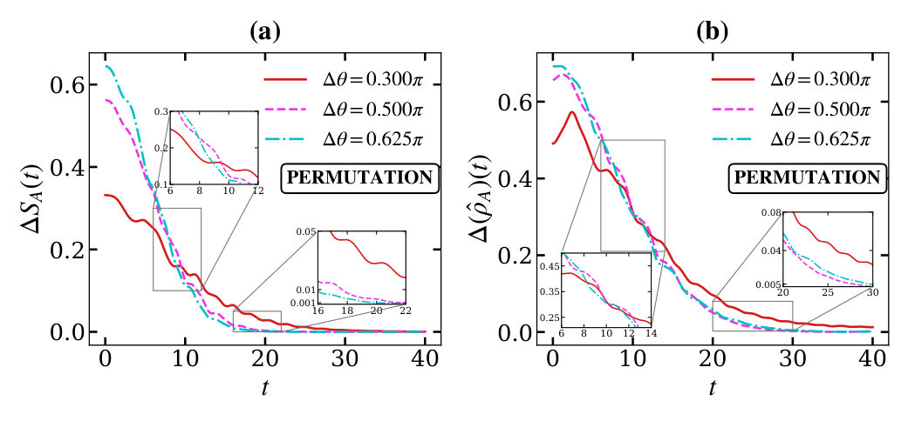
<figcaption class="paper-figure-caption"><b>Fig 4.</b> FIG. 4. Permutational symmetry-breaking dynamics : (a) Time evolution of the entanglement asymmetry ∆SA(t) and (b) trace distance ∆(ρA)(t) for the permutational symmetry case. The three curves correspond to different symmetry-breaking parameter ∆θ. The results are obtained by exact diagonalization for N = 80 , NA = 2, by drawing subsystem from the middle of the spin chain, for the Hamiltonian in Eq. (1) with parameters α1 = 1/N, α2 = 2/N, and p = π/2. The insets magnify the indicated intermediate and late time regions to clearly highlight the differences between the curves.</figcaption>
</figure>
<figure class="paper-figure-card">

<figcaption class="paper-figure-caption"><b>Fig 5.</b> FIG. 5. Comparison of the contributions from ˆ WA(t) and ˆδA(t) to the trace distance ∆(ˆρA)(t) dynamics for (a) charge and (b) permutation symmetries. The charge symmetry broken initial state has θ = 0.3π, and is evolved with the Hamiltonian</figcaption>
</figure>
</div>

<p><strong>Summary.</strong> This paper compares two diagnostics, entanglement asymmetry and trace distance, to determine when they both accurately describe the symmetry restoration dynamics linked to the Quantum Mpemba Effect in spin systems. By analyzing charge versus permutation symmetries, the authors show that the reliability of energy-based measures depends strongly on the underlying symmetry structure. This clarifies the distinct physical information encoded by different quantum diagnostics.</p>
<p><strong>Why it may be interesting.</strong> This work provides a rigorous theoretical framework for distinguishing between different types of quantum information measures (entanglement vs. energy-based) in non-equilibrium dynamics, which is crucial for understanding relaxation processes in complex quantum many-body systems.</p>
<details>
<summary>Detailed structure</summary>
<p><strong>Main problem.</strong> The paper investigates the conditions under which conventional energy-based diagnostics, like the trace distance, accurately capture the symmetry-restoration dynamics associated with the Quantum Mpemba Effect (QME) when compared to entanglement asymmetry.</p>
<p><strong>Main result.</strong> The diagnostic used depends critically on the symmetry structure: for charge symmetry, the trace distance effectively tracks entanglement asymmetry, but for permutation symmetry, a significant residual contribution causes them to evolve differently.</p>
<p><strong>Method.</strong> The study combines numerical simulations with an analytical decomposition of the trace distance into symmetry-coherence and residual contributions to compare its dynamics against entanglement asymmetry.</p>
<p><strong>Model / system.</strong> The analysis is performed on closed spin-1/2 quantum systems, utilizing Hamiltonians exhibiting different symmetries, specifically charge symmetry and permutation symmetry. Initial states are prepared as symmetry-breaking product states.</p>
<p><strong>Key observables.</strong> Entanglement asymmetry ($\Delta S_A$) and Trace distance ($\Delta(\hat{
ho}_A)(t)$).</p>
<p><strong>Important parameters / regimes.</strong> Symmetry-breaking parameters (e.g., tilt angle $    heta$ for charge symmetry; polar-angle difference $\Delta	heta$ for permutation symmetry).</p>
<p><strong>Assumptions / limitations.</strong> The analysis relies on decomposing the trace distance and comparing the time evolution of two distinct symmetry-breaking scenarios (charge vs. permutation).</p>
<p><strong>Figures summary.</strong> Figures compare the time evolution of $\Delta S_A(t)$ and $\Delta(\hat{
ho}_A)(t)$ for different symmetry-breaking initial states, showing qualitative agreement for charge symmetry but divergence for permutation symmetry.</p>
<p><strong>Paper structure.</strong> The paper first introduces the problem by comparing two diagnostics ($\Delta S_A$ vs. Trace Distance) in spin systems. It then analyzes specific symmetry cases (charge vs. permutation) by decomposing the trace distance. Finally, it establishes the conditions under which the energy-based diagnostic is reliable.</p>
</details>
<details>
<summary>Abstract</summary>
<p>Understanding symmetry restoration in isolated quantum many-body systems is an important problem in nonequilibrium many-body quantum physics. Recent studies have shown that the quantum Mpemba effect can be characterized through entanglement asymmetry, where states with stronger initial symmetry breaking restore symmetry faster. However, it remains unclear whether conventional energy-based measures, such as the trace distance, capture the same phenomenon. We investigate this question in closed spin-$1/2$ quantum systems with different symmetries by analyzing the dynamics of symmetry-breaking initial states. Combining numerical simulations with an analytical decomposition of the trace distance into symmetry-coherence and residual contributions, we identify the conditions under which trace distance tracks entanglement asymmetry and reproduces the Mpemba--like behavior observed in it. For charge symmetry, the residual contribution is negligible, making the trace distance effectively governed by symmetry-sector coherences. In contrast, for permutation symmetry, a significant residual contribution leads to qualitatively different relaxation dynamics. Our results establish when conventional energy-based diagnostics reliably capture symmetry-restoration dynamics and clarify the distinct physical information encoded by entanglement asymmetry and trace distance.</p>
</details>
<p><sub><a href="#top">↑ back to top</a></sub></p>

<p><a id="paper-2609.09988"></a></p>
<h3 id="efficient-protocol-for-the-markovian-mpemba-effect-in-math760math-level-systems"><a href="http://arxiv.org/abs/2609.09988v1">Efficient protocol for the Markovian Mpemba effect in $N$-level systems</a></h3>
<p><strong>Authors:</strong> David Gelbwaser-Klimovsky<br>
<strong>Type:</strong> theory · <strong>Category:</strong> statistical mechanics · <strong>PDF:</strong> <a href="https://arxiv.org/pdf/2609.09988v1">https://arxiv.org/pdf/2609.09988v1</a><br>
<strong>Analysis basis:</strong> full PDF text, analyzed in chunks
<strong>Topic relevance:</strong> <code>correlated / nonlocal dissipation</code> <strong>1/5</strong> · <code>driven-dissipative phase transition</code> <strong>1/5</strong> · <code>methods for driven-dissipative</code> <strong>1/5</strong> · <code>non-equilibrium universality</code> <strong>1/5</strong> · <code>scars &amp; prethermalization</code> <strong>1/5</strong></p>
<div class="figure-strip-hint">↔ Scroll figures horizontally</div>
<div class="paper-figures-scroll">
<figure class="paper-figure-card">

<figcaption class="paper-figure-caption"><b>Fig 1.</b> FIG. 1. Each point inside the triangle represents a state of the 3LS population, {p1, p2, p3}. The corners are pure states of levels 1, 2 or 3, respectively. The thermal states are repre- sented by one of the color lines, whose shape depends on the energy level distribution through r.</figcaption>
</figure>
<figure class="paper-figure-card">
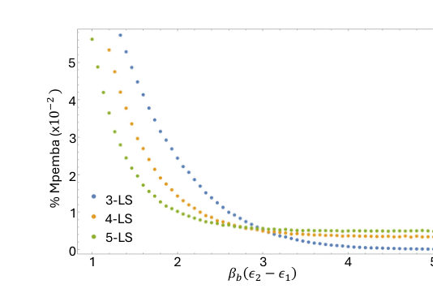
<figcaption class="paper-figure-caption"><b>Fig 2.</b> FIG. 2. Probability for N-level Markovian Mpemba effect as a function of the normalized bath inverse temperature. We considered bounded values of transition rates (0 &lt; aij &lt; 1). As shown in the plot, the probability decreases with bath tem- perature. 3-, 4-, and 5-level systems are shown in the figure. The convergence of the results was assessed by increasing the number of realizations and confirming that this did not signif- icantly alter the plot. For the transition rates, we considered values from 0.001 to 1 and for βbϵi from 0 to 5N. Each point in the graphs is based in 106 random realizations.</figcaption>
</figure>
<figure class="paper-figure-card">

<figcaption class="paper-figure-caption"><b>Fig 3.</b> FIG. 4. Markovian Mpemba effect for the lowest three hydrogen-like energy levels, r &lt; 1, as a function of the normal- ized transition rates. The upper plots show the area (in dark blue) of Mechanism 4, the only mechanism for the Markovian Mpemba effect for r &lt; 1. The bottom plots show the region of the inverse Markovian Mpemba effect (yellow) and the direct Markovian Mpemba effect (blue). Each plot column corre- sponds to a different βb. See Figure 3 for other details of the color coding. The energy levels are (arbitrary units): -5,-5/4,- 5/9.</figcaption>
</figure>
<figure class="paper-figure-card">

<figcaption class="paper-figure-caption"><b>Fig 4.</b> FIG. 3. Markovian Mpemba effect for the lowest three rota- tional energy levels, r &gt; 1, as a function of the normalized transition rates. The upper plots show the different mecha- nisms: Mechanism 1 (red), Mechanism 2 (light orange), and Mechanism 3 (Dark orange). The lower plots show the regions of the inverse (yellow) and direct (blue) Markovian Mpemba effect. In all plots, the purple regions correspond to parame- ter values without the Markovian Mpemba effect, and a black point represents the singular point. Each plot column corre- sponds to a different βb. The energy levels are 2, 6 and 12 (in arbitrary units).</figcaption>
</figure>
<figure class="paper-figure-card">
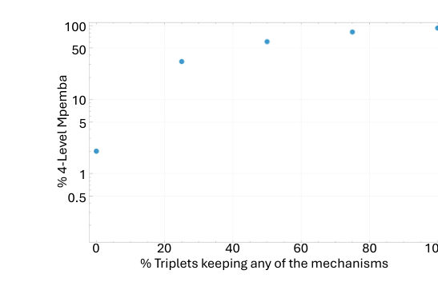
<figcaption class="paper-figure-caption"><b>Fig 5.</b> FIG. 5. Probability of a 4-level system exhibiting the Marko- vian Mpemba effect as a function of how many of its triplets exhibit any of the 3LS Markovian Mpemba mechanisms. No- tice that even in the case that all the triplets keep one of the 3LS mechanisms, the 4-level system may not exhibit the Markovian Mpemba effect. In this case, the probability is ∼93%. The convergence of the results was assessed by in- creasing the number of realizations and confirming that this did not significantly alter the plot. For the transition rates, we considered values from 0.001 to 1 and for βbϵi from 0 to 5. 5 × 105 realizations were used for the whole plot.</figcaption>
</figure>
</div>

<p><strong>Summary.</strong> This work provides a comprehensive theoretical framework to understand the rare Mpemba effect in quantum systems. By first solving the necessary and sufficient conditions for 3-level systems, the authors develop an efficient Single Pair of States Deviation (SPSD) protocol. This protocol allows for the systematic search of parameters to realize and predict the Mpemba effect in large N-level quantum systems.</p>
<p><strong>Why it may be interesting.</strong> The Mpemba effect is a non-monotonic phenomenon in thermalization dynamics, which is a key topic in non-equilibrium statistical mechanics. The development of a general protocol for finding its parameters in large systems is highly valuable for theoretical modeling.</p>
<details>
<summary>Detailed structure</summary>
<p><strong>Main problem.</strong> The paper investigates the necessary and sufficient conditions for the Markovian Mpemba effect in general N-level quantum systems.</p>
<p><strong>Main result.</strong> The authors derive an efficient protocol to determine the parameters for the Mpemba effect in N-level systems by analyzing the behavior near a 'singular point' derived from 3-level system analysis.</p>
<p><strong>Method.</strong> The analysis uses the Pauli rate equation, eigenvalue analysis of the transition matrix, and develops a Single Pair of States Deviation (SPSD) protocol to efficiently map the parameter space.</p>
<p><strong>Model / system.</strong> The study focuses on non-degenerate N-level systems (starting with 3-level systems) undergoing thermalization governed by the Pauli rate equation, assuming detailed balance.</p>
<p><strong>Key observables.</strong> The probability of the Markovian Mpemba effect, the fast eigenvector angle, and the success rate of the SPSD protocol.</p>
<p><strong>Important parameters / regimes.</strong> The energy level spacing parameter r, the bath inverse temperature $\beta_b$, and the transition rates (e.g., $\tilde{a}_{23}, \tilde{a}_{13}$).</p>
<p><strong>Assumptions / limitations.</strong> The analysis relies on the Pauli rate equation and Markovian approximations, and often assumes detailed balance for deriving necessary conditions.</p>
<p><strong>Figures summary.</strong> Figures show the probability of the effect vs. temperature for 3-, 4-, and 5-level systems, and matrix plots illustrate how rate deviations affect the effect type (direct/inverse Mpemba) for various temperatures.</p>
<p><strong>Paper structure.</strong> The paper progresses from establishing necessary and sufficient conditions for the 3-level case, to developing the general SPSD protocol for N-level systems, and finally demonstrating the protocol's efficiency and temperature dependence.</p>
</details>
<details>
<summary>Abstract</summary>
<p>The Mpemba effect is an anomalous phenomenon in which the time to thermalize does not depend monotonically on the distance from equilibrium, allowing systems with an initially larger temperature difference to thermalize before those with a smaller one. The rarity of the effect makes it hard to find parameters that produce it, complicating the design of experiments and the development of applications. Here, we find necessary and sufficient conditions for the Markovian Mpemba effect in three-level systems and explain its underlying physical mechanisms. Based on our understanding of the three-level case, we develop an efficient algorithm to determine the parameters for the effect in $N$-level systems. This protocol could open the door for the realization of Mpemba experiments and related applications in large systems.</p>
</details>
<p><sub><a href="#top">↑ back to top</a></sub></p>

<p><a id="paper-2609.09936"></a></p>
<h3 id="configurational-space-separation-and-structure-selection-in-three-hard-squares"><a href="http://arxiv.org/abs/2609.09936v1">Configurational-space separation and structure selection in three hard squares</a></h3>
<p><strong>Authors:</strong> Yuheng Yang, Meng Xiao, Duanduan Wan<br>
<strong>Type:</strong> theory · <strong>Category:</strong> statistical mechanics · <strong>PDF:</strong> <a href="https://arxiv.org/pdf/2609.09936v1">https://arxiv.org/pdf/2609.09936v1</a><br>
<strong>Analysis basis:</strong> full PDF text, analyzed in chunks
<strong>Topic relevance:</strong> <code>analog quantum simulation</code> <strong>1/5</strong> · <code>methods for driven-dissipative</code> <strong>1/5</strong> · <code>scars &amp; prethermalization</code> <strong>1/5</strong></p>
<div class="figure-strip-hint">↔ Scroll figures horizontally</div>
<div class="paper-figures-scroll">
<figure class="paper-figure-card">

<figcaption class="paper-figure-caption"><b>Fig 1.</b> FIG. 1. (a) Schematic illustration of three hard squares in a two-dimensional periodic box. The variable r denotes the center-to-center distance between two squares. (b) Ra- dial distribution function g(r) for packing fractions ϕ = 0.1, 0.3, 0.55, 0.6, 0.65, and 0.7 (increasing from bottom to top). Gray dashed lines show the results from uniform inser- tion sampling, while solid lines correspond to MCMC results. Inset: the difference ∆g(r) between the two methods; curves are vertically offset by 0.2 for clarity.</figcaption>
</figure>
<figure class="paper-figure-card">

<figcaption class="paper-figure-caption"><b>Fig 2.</b> FIG. 2. (a) Maximally packed configurations for two distinct configuration classes, I and II, with ϕmax = 0.75 and 2/3, re- spectively. (b) Pressure βPa2 as a function of packing fraction ϕ, obtained from MCMC simulations initialized from config- uration classes I and II, respectively. (c) Zoomed-in view of the region highlighted by the orange dashed box in (b), with additional simulation points. The green line shows the results obtained from the uniform insertion method. The black lines indicate the two branches classified by machine learning. The vertical dashed black line marks ϕ = 0.6.</figcaption>
</figure>
<figure class="paper-figure-card">

<figcaption class="paper-figure-caption"><b>Fig 3.</b> FIG. 3. Transition pathways between the two configuration classes. (a)–(d) Representative configurations along an MCMC transition from the larger configuration-space region associated with class I to the smaller region associated with class II at ϕ = 0.59. In (a) and (b), the red arrows indicate the subsequent rotation of square 3. In (c), the three squares have nearly the same orientation, as highlighted by the dashed red rectangle; the red arrow indicates their subsequent collective rotation. (e) Area-normalized probability density f(θ) of the square orientation angle θ at ϕ = 0.59, obtained from uniform insertion sampling and normalized such that R π/2 0 f(θ) dθ = 1. Here, θ is defined...</figcaption>
</figure>
<figure class="paper-figure-card">
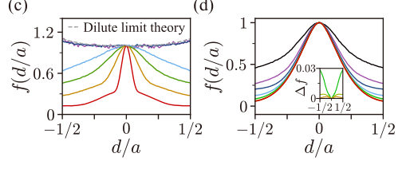
<figcaption class="paper-figure-caption"><b>Fig 4.</b> FIG. 4. Definition and distributions of the local order pa- rameter d/a. (a) Definition of d. For a reference square, we consider its four adjacent square regions, indicated by dashed outlines. If the center of mass of another square or one of its periodic images lies within one of these regions, it is projected perpendicularly onto the corresponding side of the reference square. The signed distance between the projection point and the midpoint of that side is defined as d (red segment), with the positive direction chosen to follow the clockwise orienta- tion around the reference square. (b) Representative config- urations with d = 0 and d = a/2. (c) Normalized frequency f(d/a) as a...</figcaption>
</figure>
</div>

<p><strong>Summary.</strong> This work analyzes how excluded-volume geometry dictates the accessible configuration space for three hard squares, revealing a sharp separation in the allowed phase space at $\phi=3/5$. The study uses advanced simulation techniques to map out the transition between two distinct structural regimes, demonstrating how simple geometric rules can govern complex, many-body ordering signatures even in a minimal system.</p>
<p><strong>Why it may be interesting.</strong> Although focused on classical hard-body physics, the concept of configurational space bottlenecks and emergent structure selection from minimal constraints is highly relevant to understanding phase transitions and ordering in complex quantum many-body systems.</p>
<details>
<summary>Detailed structure</summary>
<p><strong>Main problem.</strong> The study investigates the configurational-space separation and the emergence of structure selection in a minimal system of three hard squares confined in 2D.</p>
<p><strong>Main result.</strong> The system exhibits a clear separation in its allowed configurational space at a density $\phi_{sep}=3/5$, and local structure selection favors L-shaped arrangements characteristic of higher-density ordering.</p>
<p><strong>Method.</strong> The analysis combines Monte Carlo simulations (MCMC) with uniform non-overlapping insertion sampling to probe configurational space connectivity and measure pressure.</p>
<p><strong>Model / system.</strong> The model consists of three hard squares confined within a two-dimensional periodic box. The complexity arises from excluded-volume constraints governing particle interactions.</p>
<p><strong>Key observables.</strong> Radial distribution functions $g(r)$, pressure ($eta P a^2$), local order parameter $d/a$, and the identification of two distinct configuration classes (Class I and Class II).</p>
<p><strong>Important parameters / regimes.</strong> Packing fraction ($\phi$), the critical separation density ($\phi_{sep} = 3/5$), and the particle number ($N=3$).</p>
<p><strong>Assumptions / limitations.</strong> The analysis assumes that the discrepancy between MCMC and uniform sampling is due to configurational space separation, and that the dilute-limit calculation can neglect correlations beyond pair excluded-volume constraints.</p>
<p><strong>Figures summary.</strong> Figures compare $g(r)$ from different sampling methods, show pressure divergence confirming space separation, and illustrate transition pathways between configuration classes (I and II) near $\phi=0.6$.</p>
<p><strong>Paper structure.</strong> The paper first establishes the discrepancy between simulation methods at intermediate densities, identifying the separation density $\phi_{sep}$. It then characterizes the two disconnected configuration classes and uses geometric arguments and machine learning classifiers to map the transition pathways connecting them. Finally, it derives the dilute-limit reference curve for angular measures.</p>
</details>
<details>
<summary>Abstract</summary>
<p>Self-assembly of hard particles with diverse shapes gives rise to a rich variety of structures through excluded-volume constraints alone. Here we show that even a minimal system of three hard squares confined in a two-dimensional periodic box exhibits nontrivial configurational behavior relevant to structure selection. As the packing fraction increases, radial distribution functions obtained from Markov-chain Monte Carlo and uniform non-overlapping insertion sampling agree at low densities, deviate markedly over an intermediate range, and converge again at higher densities. Pressure measurements provide strong numerical evidence that the discrepancy originates from the separation of the allowed configurational space into two disconnected regions above a characteristic density. We identify the separation density as $φ_{\rm sep}=3/5$, construct explicit overlap-free transition pathways connecting the two regions immediately below it, and quantify their relative configurational-space volumes. At higher packing fractions, an approximately L-shaped arrangement of the particle centers becomes strongly favored over a staggered one, revealing a structural motif characteristic of tetratic and square-lattice ordering in larger hard-square systems. These results show that excluded-volume geometry can govern both configurational connectivity and local structure selection even in a three-particle system, revealing how signatures of many-particle self-assembly can already emerge in the few-particle limit.</p>
</details>
<p><sub><a href="#top">↑ back to top</a></sub></p>

<p><a id="paper-2609.09594"></a></p>
<h3 id="coarse-graining-to-create-minimalist-models-for-dynamic-end-linked-star-polymer-networks"><a href="http://arxiv.org/abs/2609.09594v1">Coarse-graining to create minimalist models for dynamic, end-linked star-polymer networks</a></h3>
<p><strong>Authors:</strong> Tyla R. Holoman, C. Levi Petix, Michael P. Howard, Thomas M. Truskett<br>
<strong>Type:</strong> theory · <strong>Category:</strong> statistical mechanics · <strong>PDF:</strong> <a href="https://arxiv.org/pdf/2609.09594v1">https://arxiv.org/pdf/2609.09594v1</a><br>
<strong>Analysis basis:</strong> full PDF text, analyzed in chunks
<strong>Topic relevance:</strong> <code>Keldysh / 2PI / non-Gaussian methods</code> <strong>1/5</strong> · <code>methods for driven-dissipative</code> <strong>1/5</strong></p>
<div class="figure-strip-hint">↔ Scroll figures horizontally</div>
<div class="paper-figures-scroll">
<figure class="paper-figure-card">
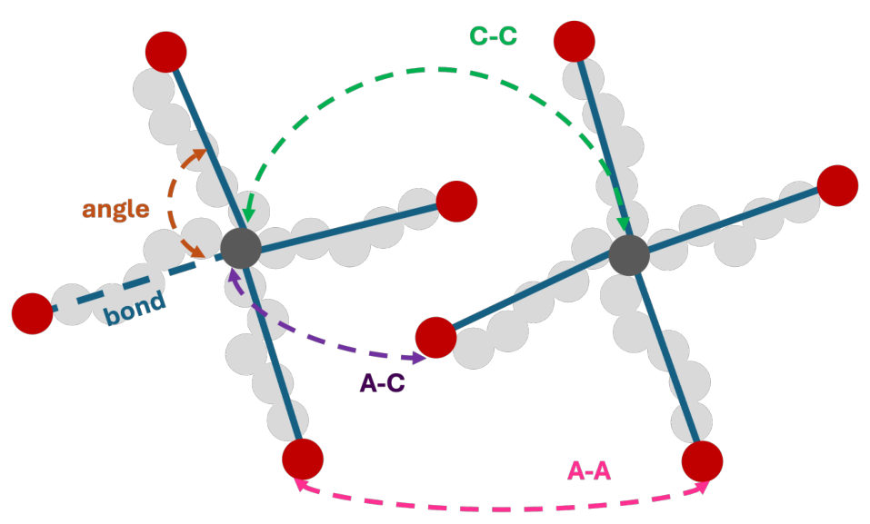
<figcaption class="paper-figure-caption"><b>Fig 1.</b> FIG. 1. Schematic of fine-grained (FG) and coarse-grained (CG) models for tetra-PEG.</figcaption>
</figure>
<figure class="paper-figure-card">

<figcaption class="paper-figure-caption"><b>Fig 2.</b> FIG. 2. Crossover from dilute to semidilute conditions. Radius of gyration for the FG</figcaption>
</figure>
<figure class="paper-figure-card">

<figcaption class="paper-figure-caption"><b>Fig 3.</b> FIG. 3. Transferability of CG model. Top row: CG pair potential uCG as a function of</figcaption>
</figure>
<figure class="paper-figure-card">

<figcaption class="paper-figure-caption"><b>Fig 4.</b> FIG. 4. Intra-star correlations. Probability density p of arm length R in the CG and FG models</figcaption>
</figure>
<figure class="paper-figure-card">
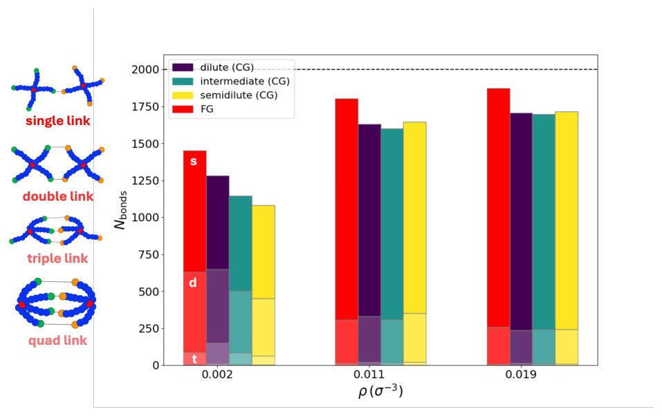
<figcaption class="paper-figure-caption"><b>Fig 5.</b> FIG. 5. Inter-star bonding motifs. Total number of bonds and number of bonds for different</figcaption>
</figure>
</div>

<p><strong>Summary.</strong> This work addresses the challenge of modeling complex star-polymer networks by developing a simplified, coarse-grained model using relative-entropy coarse-graining. By comparing the simple model's predictions against a high-resolution simulation, the authors demonstrate how to create computationally efficient representations while quantifying the inherent trade-offs in accuracy and transferability.</p>
<p><strong>Why it may be interesting.</strong> While the focus is on polymer physics, the rigorous application of relative entropy and systematic model reduction techniques (coarse-graining) is a powerful, generalizable tool in statistical mechanics for multiscale modeling, which has parallels in quantum many-body systems.</p>
<details>
<summary>Detailed structure</summary>
<p><strong>Main problem.</strong> The goal is to develop simple, minimalist models for dynamic, end-linked star-polymer networks to accurately predict their macroscopic behavior while minimizing computational complexity.</p>
<p><strong>Main result.</strong> The study successfully validates a 5-bead coarse-grained model by comparing its predictions (e.g., phase behavior) against a finer-grained bead-spring model, while also quantifying the trade-offs in model accuracy versus computational efficiency.</p>
<p><strong>Method.</strong> Relative-entropy coarse-graining is employed, minimizing the relative entropy between the fine-grained and coarse-grained ensembles using simulation data from various concentrations.</p>
<p><strong>Model / system.</strong> The system involves dynamic, end-associating four-armed poly(ethylene glycol) (tetra-PEG) macromers forming gel networks. The model compares a detailed bead-spring representation (FG) to a simplified 5-bead model (CG) incorporating specific potentials for bonding and interactions.</p>
<p><strong>Key observables.</strong> Structural correlations, network connectivity, phase behavior, and the root mean squared radius of gyration ($\langle R_g^2 
angle^{1/2}$).</p>
<p><strong>Important parameters / regimes.</strong> Three distinct concentrations (dilute, intermediate, semidilute) are used for parameterization; the relative entropy minimization is performed across these states.</p>
<p><strong>Assumptions / limitations.</strong> The CG parameters are determined by minimizing relative entropy based on FG simulations performed <em>without</em> star-star bonding, which introduces inherent limitations on transferability.</p>
<p><strong>Figures summary.</strong> Figure 1 schematically compares the FG and CG interaction potentials for tetra-PEG. Figure 2 illustrates the dependence of $\langle R_g^2 
angle^{1/2}$ on density ($
ho$) for the FG model, guiding the selection of parametrization densities.</p>
<p><strong>Paper structure.</strong> The paper systematically develops the coarse-graining methodology using relative entropy minimization, validates the resulting 5-bead model by comparing structural and phase properties against the high-resolution model, and concludes by discussing the inherent trade-offs between model simplicity and physical accuracy.</p>
</details>
<details>
<summary>Abstract</summary>
<p>Although minimalist models for patchy attractive particles have revealed powerful design rules for how particle valence directs colloidal assembly, less work has focused on comparably simple models of reversible, network-forming star polymers. Here, we use relative-entropy coarse-graining and simulation results from finer-resolution bead--spring star polymers to generate 5-bead models of dynamic, end-associating four-armed poly(ethylene glycol) macromers. Our results comparing structural correlations, network connectivity, and phase behavior of the coarse- and fine-grained models provide insight into how the accuracy and transferability of the coarse-grained models depend on the state point chosen for coarse-graining. The results also reveal intrinsic trade-offs between reducing degrees of freedom and expanding the range of effective interactions in coarse-graining that impact the total number of pairwise interactions in the resulting model, with implications for its computational efficiency.</p>
</details>
<p><sub><a href="#top">↑ back to top</a></sub></p>

<p><a id="paper-2609.09571"></a></p>
<h3 id="momentum-resolved-quantum-noise-spectroscopy-using-ensembles-of-diamond-quantum-sensors"><a href="http://arxiv.org/abs/2609.09571v1">Momentum-resolved quantum noise spectroscopy using ensembles of diamond quantum sensors</a></h3>
<p><strong>Authors:</strong> Zeeshawn Kazi, Kai-Hung Cheng, Jared Rovny, Nathalie P. de Leon<br>
<strong>Type:</strong> experiment · <strong>Category:</strong> strongly correlated electrons · <strong>PDF:</strong> <a href="https://arxiv.org/pdf/2609.09571v1">https://arxiv.org/pdf/2609.09571v1</a><br>
<strong>Analysis basis:</strong> full PDF text, analyzed in chunks
<strong>Topic relevance:</strong> <code>QC/QI experiment</code> <strong>1/5</strong> · <code>quantum measurements</code> <strong>1/5</strong></p>
<div class="figure-strip-hint">↔ Scroll figures horizontally</div>
<div class="paper-figures-scroll">
<figure class="paper-figure-card">

<figcaption class="paper-figure-caption"><b>Fig 1.</b> FIG. 1. Momentum-resolved magnetic noise spectral density. (a) Schematic of a correlated, dynamic material system directly on top of a diamond hosting NV centers. (b) Zoomed in schematic showing correlated dynamics of the system sensed by a shallow NV center ensemble. (c) Fluorescence images record the magnetic noise measured by NV centers across the imaging field of view. Each pixel records the signals sensed by hundreds of NV centers (𝑁𝑥by 𝑁𝑦pixels), and 𝑀shots are taken. (d) High-fidelity imaging of NV center signals enables the construction of 𝑁𝑥× 𝑁𝑦maps of two-point magnetic noise correlators. Each map represents the correlation at a given pixel with respect to a reference pixel...</figcaption>
</figure>
<figure class="paper-figure-card">

<figcaption class="paper-figure-caption"><b>Fig 2.</b> FIG. 2. High-fidelity, wide-field readout enables massively multiplexed correlation measurements. (a) Schematic of camera readout of a high-density NV center ensemble. (b) Map of spin state readout noise 𝜎𝑅, where each pixel is used as an individual sensor. (c) The readout noise 𝜎𝑅scales with the number of NV centers in the pixel. Spin-to-charge conversion (SCC) strongly outperforms green readout for low numbers of NV centers. The lines are fit to a power law lower bounded by 1. (d) Correlation map resulting from global driven Rabi oscillations. Sensors in the dashed circle are prepared in the opposite spin state to those in the solid circle only. (e) Photon count distributions...</figcaption>
</figure>
<figure class="paper-figure-card">

<figcaption class="paper-figure-caption"><b>Fig 3.</b> FIG. 3. Momentum-resolved magnetic noise spectroscopy reveals the spatial structure of magnetic noise. (a) Two-point magnetic noise correlations at each pixel with respect to the white pixel across the imaging field of view, caused by globally applied noise from an RF coil. (b) The Fourier transform of multiplexed correlator measurements results in the momentum-resolved magnetic noise spectral density 𝑆(q, 𝜔0). (c) Radially averaged 𝑆(|𝑞|, 𝜔0) profiles (color indicates applied noise amplitude). A Gaussian fit to each returns FWHM|𝑞| ≈2𝜋× 0.2 µm−1, corresponding to the inverse of the imaging field of view (5 µm). Inset: total noise power from integrating each profile from 𝑞= 0 to 𝑞max; the...</figcaption>
</figure>
<figure class="paper-figure-card">

<figcaption class="paper-figure-caption"><b>Fig 4.</b> FIG. 4. Tunable momentum filter functions beyond the diffraction limit. (a) Measuring correlations between NV center orientations A and B below the diffraction limit. Confocal lasers initialize the charge and spin states; a doughnut pulse then ionizes NV centers in a ring, leaving sensors within a diameter 𝐷. A sensing sequence measures correlations within the volume and is read out by spin-to-charge conversion. (b) Spin state readout noise 𝜎𝑅for each orientation scales strongly with decreasing sensing volume diameter. (c) Covariance between orientations A and B in a single spot, caused by applied noise at 2.5 MHz, versus sensing volume. Error bars, standard error of the variance for...</figcaption>
</figure>
</div>

<p><strong>Summary.</strong> This paper details a technique using diamond NV centers to measure the momentum-resolved magnetic noise spectral density in correlated matter. By combining wide-field imaging with continuous tuning of the sensing volume, the authors overcome limitations in spatial and temporal resolution simultaneously. This allows for the direct mapping of low-energy, long-wavelength fluctuations crucial for understanding strongly correlated electronic phases.</p>
<p><strong>Why it may be interesting.</strong> This work provides a novel, highly sensitive, and tunable experimental platform to measure dynamic correlations in condensed matter systems, bridging the gap between bulk measurements and nanoscale probing.</p>
<details>
<summary>Detailed structure</summary>
<p><strong>Main problem.</strong> Characterizing spatiotemporal fluctuations across multiple scales in strongly correlated matter, which is difficult because conventional probes lack simultaneous high spatial and temporal resolution.</p>
<p><strong>Main result.</strong> The developed technique allows mapping the full magnetic noise spectral density $S(\mathbf{q}, \omega)$ across tunable momentum and frequency bands, enabling the study of long-wavelength fluctuations.</p>
<p><strong>Method.</strong> The authors use high-fidelity wide-field imaging of diamond NV ensembles to measure momentum and frequency power spectral density of magnetic fluctuations, employing Fourier transforms of two-point correlation functions.</p>
<p><strong>Model / system.</strong> The physical system is a dense ensemble of nitrogen vacancy (NV) centers embedded in diamond. The measurement probes magnetic noise fluctuations, allowing access to momentum space ($\mathbf{q}$) and frequency ($\omega$) spectra.</p>
<p><strong>Key observables.</strong> Momentum and frequency power spectral density of magnetic fluctuations, $S(\mathbf{q}, \omega_0)$; two-point magnetic field correlators $\langle B_{\omega_0}(\mathbf{x}_i)B_{\omega_0}(\mathbf{x}_j) 
angle$.</p>
<p><strong>Important parameters / regimes.</strong> Spatial wavevectors ($\mathbf{q}$) spanning from $\mathbf{q}_{	ext{min}} \approx 2\pi 	imes 0.25 \mu	ext{m}^{-1}$ to $\mathbf{q}_{	ext{max}} \approx 2\pi 	imes 2 \mu	ext{m}^{-1}$; tunable frequency bands; sensing volume size ($D$).</p>
<p><strong>Assumptions / limitations.</strong> The analysis relies on relating the measured spectral density to the true spectrum via specific momentum filter functions derived for different geometries (wide-field vs. single-spot).</p>
<p><strong>Figures summary.</strong> Figures illustrate the process of mapping magnetic field correlations and computing the Fourier transform to resolve features at finite momenta, and detail the wide-field spin-to-charge conversion readout.</p>
<p><strong>Paper structure.</strong> The paper systematically develops methods to measure the momentum-resolved spectral density $S(q, \omega)$ by relating it to measurable quantities (correlations, variances) using specific filter functions derived for different geometries (single center vs. ensemble vs. wide-field).</p>
</details>
<details>
<summary>Abstract</summary>
<p>Spatiotemporal fluctuations across multiple scales govern and characterize the emergent properties, phase boundaries, and low-energy excitations of strongly correlated matter. However, capturing these dynamics has remained a major experimental challenge, as conventional probes typically offer either high spatial or temporal resolution, but not both simultaneously. Here, we leverage high-fidelity wide-field imaging of dense diamond nitrogen vacancy center ensembles to measure the momentum and frequency power spectral density of magnetic fluctuations. To access spatial wavevectors below the diffraction limit, we tune the sensing volume continuously through optical depletion. This approach enables study of equilibrium and driven fluctuations across three orders of magnitude in spatial scale and tunable frequency bands, providing a direct means to map low-energy, long-wavelength fluctuations in correlated systems.</p>
</details>
<p><sub><a href="#top">↑ back to top</a></sub></p>

<p><a id="paper-2609.10463"></a></p>
<h3 id="protected-domains-and-the-cost-of-cooperation-on-weighted-networks"><a href="http://arxiv.org/abs/2609.10463v1">Protected domains and the cost of cooperation on weighted networks</a></h3>
<p><strong>Authors:</strong> Abhishek Chowdhury<br>
<strong>Type:</strong> theory · <strong>Category:</strong> statistical mechanics · <strong>PDF:</strong> <a href="https://arxiv.org/pdf/2609.10463v1">https://arxiv.org/pdf/2609.10463v1</a><br>
<strong>Analysis basis:</strong> full PDF text, analyzed in chunks
<strong>Topic relevance:</strong> <code>Keldysh / 2PI / non-Gaussian methods</code> <strong>1/5</strong> · <code>quantum measurements</code> <strong>1/5</strong></p>
<div class="figure-strip-hint">↔ Scroll figures horizontally</div>
<div class="paper-figures-scroll">
<figure class="paper-figure-card">
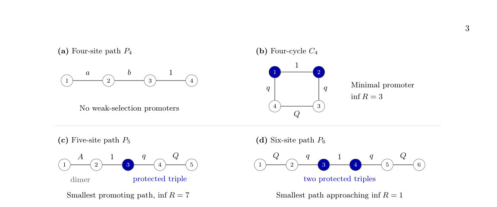
<figcaption class="paper-figure-caption"><b>Fig 1.</b> FIG. 1. Small supports distinguish establishment mechanisms. P4 represents the paths with at most four sites that do not promote at weak selection. C4 is a minimal promoter, P5 the smallest promoting path, and P6 the smallest path approaching threshold one. Edge labels are relative weights; line thickness does not encode their magnitude. Filled sites are dynamically protected pins, not fixed external spins. The limits are q →∞, q2/Q →0 on C4; 1 ≪q ≪A ≪Q on P5; and q →∞, q/Q →0 on P6. The six-site construction extends to every fixed longer path.</figcaption>
</figure>
<figure class="paper-figure-card">

<figcaption class="paper-figure-caption"><b>Fig 2.</b> FIG. 2. The initial individual and the eventual domain competitor. The upper panel distinguishes pin introductions, which establish an aligned triple in the hierarchy limit, from follower introductions, which disappear. The lower panel is the resulting four-state process in slow time s = t/q; its arrows are rates in that clock. The entrance weights belong to the original uniform- singleton experiment. A pin is slowly overwritten, not externally fixed at finite weights.</figcaption>
</figure>
<figure class="paper-figure-card">

<figcaption class="paper-figure-caption"><b>Fig 3.</b> FIG. 3. Finite microscopic checks on (q3, q, 1, q, q3). (a) The complete committor calculation for exponential fecundity at κ = δc = 0.25, compared with the limiting advantage 1 3 tanh[κ(b/c −1)/2]. (b) Neutral mean absorption times approach TU/q = 1 and TC/q = 3. The two panels test selected fixation and neutral time separately. This family illustrates the mechanism; the optimal contact design is determined below.</figcaption>
</figure>
<figure class="paper-figure-card">
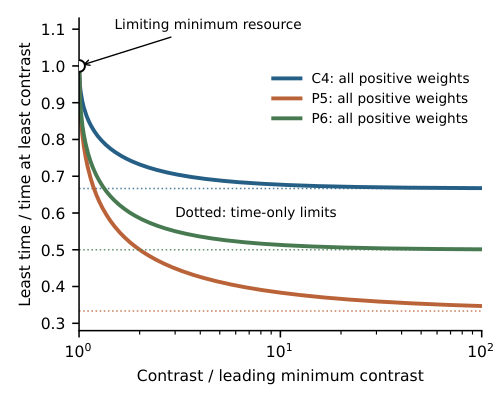
<figcaption class="paper-figure-caption"><b>Fig 4.</b> FIG. 4. The analytical leading time–contrast frontiers, nor- malized by each support’s least-contrast design. Extra con- trast shortens the invasion while retaining its threshold tar- get. Dotted lines indicate the time-only limiting infima. Each curve concerns its own threshold floor and the same global at- tempt clock.</figcaption>
</figure>
<figure class="paper-figure-card">

<figcaption class="paper-figure-caption"><b>Fig 5.</b> FIG. 5. The leading joint tolerance and signal. (a) With saturated cores and no pin imbalance, X = p</figcaption>
</figure>
</div>

<p><strong>Summary.</strong> This theoretical paper analyzes the conditions for the spread of costly cooperation on weighted networks using a donation game model. It calculates precise weak-selection thresholds for various network topologies, showing that cooperation's success depends critically on the network's structure and the observation time. The work employs advanced stochastic analysis to quantify the trade-offs between cooperation benefit, cost, and network heterogeneity.</p>
<p><strong>Why it may be interesting.</strong> The rigorous mathematical treatment of cooperation dynamics, using fluctuation theorems and threshold analysis, provides a powerful framework applicable to non-equilibrium processes in complex systems, which has parallels in open quantum systems where environmental coupling drives selection.</p>
<details>
<summary>Detailed structure</summary>
<p><strong>Main problem.</strong> The paper investigates the conditions under which costly cooperation can spread and persist within a population structured on a weighted network.</p>
<p><strong>Main result.</strong> It determines specific weak-selection thresholds (e.g., $b/c=3$ on a four-cycle) required for cooperation to be favored, showing that achieving higher advantages requires increasing network heterogeneity and observation time.</p>
<p><strong>Method.</strong> The analysis uses exact fluctuation response theory and fluctuation analysis on stochastic processes defined by a donation game on a graph. It involves comparing fixation probabilities of cooperators versus defectors.</p>
<p><strong>Model / system.</strong> The model is a donation game played on a finite, weighted, undirected network. Individuals inherit traits via copying, and the dynamics are governed by payoff-dependent rates on the network structure.</p>
<p><strong>Key observables.</strong> Fixation advantage ($\Delta = 
ho_C - 
ho_D$), weak-selection threshold ($b/c$), and the susceptibility ($S$).</p>
<p><strong>Important parameters / regimes.</strong> The benefit-to-cost ratio ($b/c$), network topology (cycles, paths), and the small-selection parameter $\epsilon$.</p>
<p><strong>Assumptions / limitations.</strong> The analysis is restricted to the source-first updating rule and relies on identifying protected domains through fluctuation analysis.</p>
<p><strong>Figures summary.</strong> Figures illustrate small supports ($P_4, C_4, P_5, P_6$) and demonstrate how different network structures relate to the minimum required promotion thresholds ($\inf R$).</p>
<p><strong>Paper structure.</strong> The paper progresses from defining the game and network dynamics to calculating fixation probabilities using advanced stochastic methods. It then performs detailed optimization analysis on specific small supports to derive quantitative thresholds and scaling laws for the invasion advantage.</p>
</details>
<details>
<summary>Abstract</summary>
<p>A costly inherited trait can spread when its descendants create a favorable local environment. We ask which finite contact structures sustain such a collective competitor and what their advantage costs. Individuals play a donation game, conferring benefit $b$ at cost $c$. Reciprocal weighted contacts determine averaged payoffs and copying recipients, while sources are chosen globally according to payoff. Cooperation is favored when a uniformly introduced cooperator takes over more often than a defector in the complementary experiment. Exact fluctuation response and elimination of fast configurations identify the formation and competition of protected domains as the controlling processes. The sharp weak-selection threshold infima are $b/c=3$ on the four-cycle, $7$ on the five-site path, and $1$ on every fixed path with at least six sites. On the six-site path, a global bound forces near-barrier designs into this domain hierarchy. Polynomial relations among the contact ratios then control unrestricted optimization and imply eventual exact reflection symmetry. Reaching threshold $1+ε$ requires minimum contact contrast $656ε^{-2}[1+O(ε)]$ and neutral absorption time of order $ε^{-1}$. We determine their tradeoff and the associated design tolerance. Finite selection consumes the same margin. Within the controlled small-selection window, the maximal fixation advantage is of order $ε^{5/2}$ when the contrast exceeds its exact minimum by order $ε^{-1}$. Thus an improving invasion threshold can require increasing contact heterogeneity, precision and observation time.</p>
</details>
<p><sub><a href="#top">↑ back to top</a></sub></p>

<p><a id="paper-2609.09407"></a></p>
<h3 id="balancing-expressivity-and-overfitting-in-quantum-gaussian-process-regression"><a href="http://arxiv.org/abs/2609.09407v1">Balancing Expressivity and Overfitting in Quantum Gaussian Process Regression</a></h3>
<p><strong>Authors:</strong> Saasha Joshi, Udson C. Mendes, Luke C. G. Govia<br>
<strong>Type:</strong> both · <strong>Category:</strong> quantum information and computing · <strong>PDF:</strong> <a href="https://arxiv.org/pdf/2609.09407v1">https://arxiv.org/pdf/2609.09407v1</a><br>
<strong>Analysis basis:</strong> full PDF text, analyzed in chunks
<strong>Topic relevance:</strong> <code>quantum measurements</code> <strong>1/5</strong></p>
<div class="figure-strip-hint">↔ Scroll figures horizontally</div>
<div class="paper-figures-scroll">
<figure class="paper-figure-card">
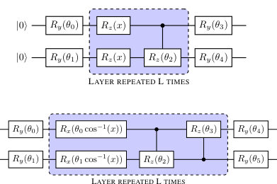
<figcaption class="paper-figure-caption"><b>Fig 1.</b> Fig. 1. Quantum feature maps considered in this work: (a) Simple feature map with repeated linear entanglement, and (b) Chebyshev feature map with repeated circular entanglement. Redrawn from [11].</figcaption>
</figure>
<figure class="paper-figure-card">
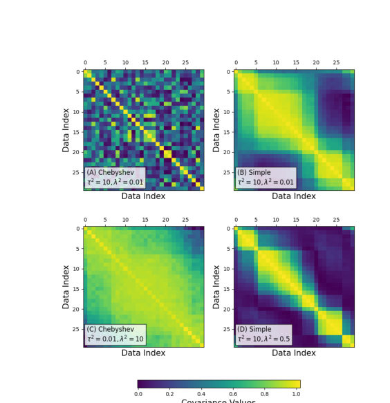
<figcaption class="paper-figure-caption"><b>Fig 2.</b> Fig. 2. Normalized covariance matrices obtained after training the QGPR surrogate. (A) Displays overfitting in the τ 2 &gt; λ2 regime. (B) Shows limited expressivity. (C) Shows underfitting with τ 2 &lt; λ2. (D) Displays balanced performance.</figcaption>
</figure>
<figure class="paper-figure-card">
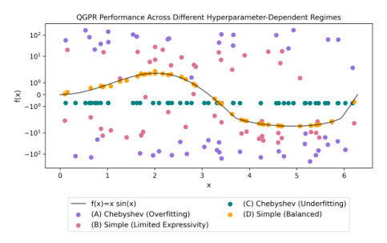
<figcaption class="paper-figure-caption"><b>Fig 3.</b> Fig. 3. QGPR performance across the four hyperparameter-dependent regimes. The colored dots depict the QGPR mean prediction for each model.</figcaption>
</figure>
</div>

<p><strong>Summary.</strong> This work explores Quantum Gaussian Process Regression (QGPR) for modeling complex functions using quantum kernels. The authors demonstrate that successful performance hinges on carefully tuning regularization hyperparameters to balance the kernel's expressive power against overfitting. This provides crucial guidelines for applying quantum machine learning techniques in active learning settings.</p>
<p><strong>Why it may be interesting.</strong> It provides a concrete, applied example of using quantum circuits (feature maps) to enhance classical machine learning techniques (GPR), which is highly relevant for near-term quantum algorithm development.</p>
<details>
<summary>Detailed structure</summary>
<p><strong>Main problem.</strong> The paper investigates how to effectively use quantum kernels within Gaussian Process Regression (GPR) for active learning to model expensive black-box functions.</p>
<p><strong>Main result.</strong> Performance critically depends on balancing the kernel's expressivity against overfitting, requiring careful regularization selection, especially for quantum fidelity kernels.</p>
<p><strong>Method.</strong> The authors simulate QGPR using quantum feature maps (Simple/Chebyshev) and optimize hyperparameters ($ au^2, \lambda^2$) via SPSA to minimize the Negative Log Marginal Likelihood.</p>
<p><strong>Model / system.</strong> The model is Quantum Gaussian Process Regression (QGPR), which uses a quantum kernel derived from the fidelity between quantum states $|\phi(x)
angle$ generated by parameterized quantum circuits.</p>
<p><strong>Key observables.</strong> Mean Squared Error (MSE) on a test set, and the structure of the learned covariance matrix (diagnosing overfitting, underfitting, or balance).</p>
<p><strong>Important parameters / regimes.</strong> Hyperparameters $   au^2$ (signal variance) and $\lambda^2$ (noise variance); kernel type (Simple vs. Chebyshev); and the training regime (single-shot vs. iterative).</p>
<p><strong>Assumptions / limitations.</strong> The study focuses on low-dimensional kernels and does not explore the quantum advantage regime with high-dimensional feature maps.</p>
<p><strong>Figures summary.</strong> Figure 2 illustrates the four performance regimes (Overfitting, Limited Expressivity, Underfitting, Balanced) via normalized covariance matrices, while Figure 3 shows mean predictions across these regimes.</p>
<p><strong>Paper structure.</strong> The paper establishes the active learning/GPR framework, details the quantum kernel construction, and then systematically analyzes performance across different hyperparameter regimes and kernel types, culminating in diagnostic visualizations.</p>
</details>
<details>
<summary>Abstract</summary>
<p>Active learning is a paradigm of machine learning that can be utilized to model expensive black-box functions by training a surrogate model from actively queried training points. The performance of this framework depends heavily on the choice of the surrogate model. When the surrogate is Gaussian Process Regression (GPR), its performance is largely determined by the expressivity of the underlying kernel. In this work, we investigate the peculiarities of using a quantum kernel to change the computational dynamics of active learning with GPR, focusing on the sensitivity to regularization by hyperparameter tuning. While generic, unstructured kernels suffer from exponential concentration at large scale, we empirically demonstrate that even at small scale overfitting can collapse GPR performance. Kernel regularization can be used to counteract this effect, but due to the smoothness of the quantum fidelity kernel, regularization must be carefully chosen to balance expressivity and overfitting. Our qualitative results transfer to the practical application of restricted quantum kernels designed to avoid exponential concentration and also present the kinds of noise that may be valuable to kernel training in near-term quantum devices.</p>
</details>
<p><sub><a href="#top">↑ back to top</a></sub></p>

<p><a id="paper-2609.09615"></a></p>
<h3 id="eight-unit-cell-electronic-modulations-in-cuprates-originating-from-local-molecular-orbitals"><a href="http://arxiv.org/abs/2609.09615v1">Eight-unit-cell electronic modulations in cuprates originating from local molecular orbitals</a></h3>
<p><strong>Authors:</strong> Zhiheng Yao, Sixuan Chen, Jianfa Zhao, Shusen Ye, Weixiang Qu, Ning Xia, Yuling Dai, Luchuan Shi, Hongrui Zhang, Zhenqi Hao, Changqing Jin, Shuo Yang, Yayu Wang<br>
<strong>Type:</strong> both · <strong>Category:</strong> strongly correlated electrons · <strong>PDF:</strong> <a href="https://arxiv.org/pdf/2609.09615v1">https://arxiv.org/pdf/2609.09615v1</a><br>
<strong>Analysis basis:</strong> full PDF text, analyzed in chunks
<strong>Topic relevance:</strong> <code>Frenkel-Kontorova</code> <strong>1/5</strong></p>
<div class="figure-strip-hint">↔ Scroll figures horizontally</div>
<div class="paper-figures-scroll">
<figure class="paper-figure-card">
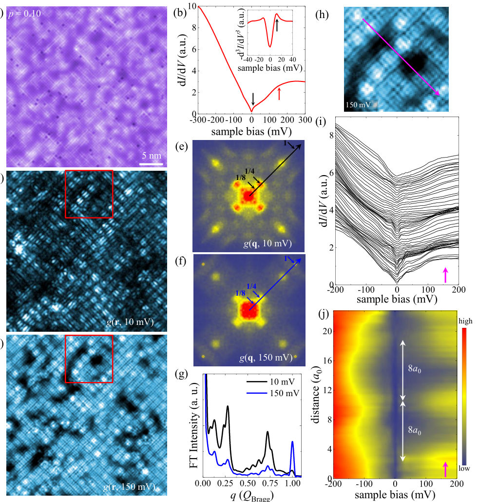
<figcaption class="paper-figure-caption"><b>Fig 1.</b> FIG. 1. Eight-unit-cell modulation in the superconducting p = 0.10 sample. (a) Large-scale topographic image of the p = 0.10 sample acquired at T = 5 K. (b) Spatially averaged dI/dV spectrum showing the superconducting gap and pseudogap. The inset is the -d3I/dV3 curve from -40 mV to 40 mV, where the superconducting gap can be clearly resolved. (c) to (d) dI/dV maps at bias Vb = 10 mV and 150 mV. (e) to (f) FT maps of (c)-(d) , revealing peaks at q ≈ 1/4 and q ≈ 1/8. (g) Line profiles along the Bragg directions in (e)-(f), highlighting both wavevectors. (h) Zoomed-in region of the red square in (c) and (d). (i) to (j) dI/dV spectra and color plot along the magenta arrow in (h), showing...</figcaption>
</figure>
<figure class="paper-figure-card">
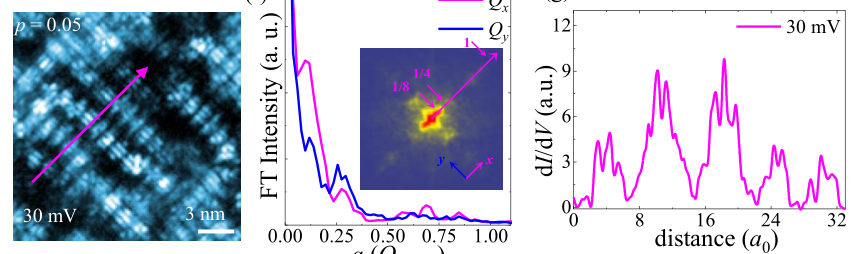
<figcaption class="paper-figure-caption"><b>Fig 2.</b> FIG. 2. Eight-unit-cell modulation in the underdoped p = 0.05 sample. (a) to (b) dI/dV maps on the p = 0.05 sample at bias Vb = 30 and 200 mV acquired at T = 5 K, revealing the formation of molecular orbitals with energy-dependent internal structures. The region of red square highlights chain-like assemblies of 4a0 plaquettes separated by intervals of approximately 4a0. (c) to (d) dI/dV spectra and corresponding color plot along the red arrow, exhibiting an 8a0 modulation over three periods. (e) dI/dV map at bias Vb = 30 mV for another FOV with unidirectional 8a0 modulation. (f) FT map (inset) of (e) and its line profiles along the Bragg peaks. (g) The magenta linecut revealing the...</figcaption>
</figure>
<figure class="paper-figure-card">
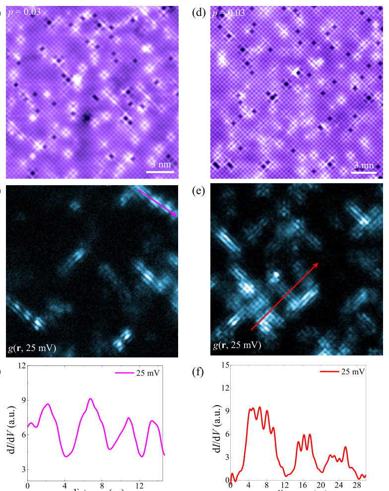
<figcaption class="paper-figure-caption"><b>Fig 3.</b> FIG. 3. Emergence of 4a0 plaquette and 8a0 modulation in the p = 0.03 sample. (a) Topographic image of p = 0.03 sample acquired at T = 23 K. (b) dI/dV map at bias Vb = 25 mV, showing the formation of almost isolated plaquettes and short chains. (c) Linecut along the magenta arrow in (b), revealing the formation of 4a0 plaquette. (d) to (e) Similar dataset as (a)-(b) at another FOV of the same sample with slightly higher local dopant concentration. (f) Linecut along the red arrow in (e), revealing the emergence of 8a0 modulation and the internal stripes of the 4a0 plaquettes.</figcaption>
</figure>
<figure class="paper-figure-card">
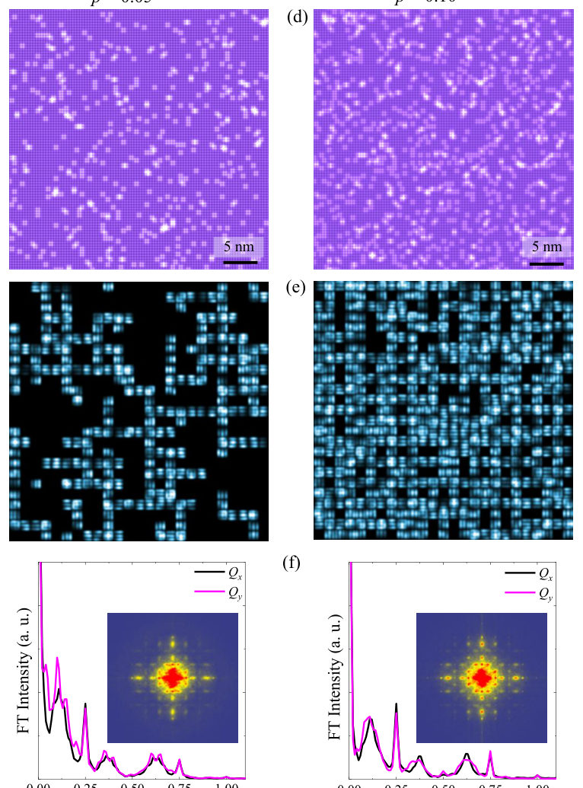
<figcaption class="paper-figure-caption"><b>Fig 4.</b> FIG. 4. Monte Carlo simulation illustrating the emergence of 8a0 modulations from the self- organization of 4a0 molecular orbitals. (a) Impurity potential generated by randomly distributed dopants for p = 0.05. (b) Representative low-temperature configurations of 4a0 plaquettes, showing the formation of plaquette chains. (c) The line profiles along the corresponding FT (inset), revealing the dominant 4a0 periodicity and the accompanying 8a0 modulation. (d) to (f) The same set of results as in (a)-(c) for p = 0.10. The plaquette chains become longer because of the increased coverage of molecular orbitals. Both the 4a0 and 8a0 periodicities are clearly observed.</figcaption>
</figure>
</div>

<p><strong>Summary.</strong> This research uses STM experiments and MCMC simulations to investigate the origin of the 8a0 electronic modulation in cuprates. The authors argue that this modulation arises fundamentally from the self-assembly of molecular orbitals structured around a 4a0 plaquette unit. This provides a strong real-space picture for the charge order, distinguishing it from conventional pairing theories.</p>
<p><strong>Why it may be interesting.</strong> The work provides a detailed real-space mechanism for charge ordering in high-Tc superconductors, linking it to local orbital physics rather than purely momentum-space pairing theories, which is relevant for understanding emergent collective electronic states.</p>
<details>
<summary>Detailed structure</summary>
<p><strong>Main problem.</strong> The paper investigates the origin and nature of the eight-unit-cell (8a0) electronic modulation observed in cuprate superconductors, aiming to determine if it is the primary order or a secondary feature.</p>
<p><strong>Main result.</strong> The 8a0 modulation is proposed to be a spatial subharmonic arising from the self-organization of molecular orbitals built upon a fundamental 4a0 x 4a0 plaquette unit, rather than solely from finite momentum pairing.</p>
<p><strong>Method.</strong> The study combines experimental spectroscopic imaging scanning tunneling microscopy (STM) measurements with theoretical modeling using Markov Chain Monte Carlo (MCMC) simulations.</p>
<p><strong>Model / system.</strong> The physical system is hole-doped cuprates, studied across the insulator-superconductor phase boundary. The theoretical model treats the plaquette as the elementary degree of freedom, governed by an energy functional incorporating impurity and nearest-neighbor interaction terms.</p>
<p><strong>Key observables.</strong> 8a0 spatial modulations observed in dI/dV maps, Fourier transform peaks at q ~ 1/8, and the correlation between 8a0 and 1.3a0 modulations.</p>
<p><strong>Important parameters / regimes.</strong> Hole doping levels (p=0.03, p=0.05, p=0.10), and simulation parameters like g_beta and W.</p>
<p><strong>Assumptions / limitations.</strong> The 8a0 modulation is not tightly bound to well-defined d-wave pairing, and the $4a_0 	imes 4a_0$ plaquette is identified as the fundamental building block.</p>
<p><strong>Figures summary.</strong> Figures show dI/dV maps revealing stripe- and ladder-shaped molecular orbital patterns, and FT analyses confirming both 4a0 and 8a0 periodicities, with simulations mapping the phase diagram dependence on interaction parameters.</p>
<p><strong>Paper structure.</strong> The paper progresses by first presenting STM evidence of 8a0 modulations in both superconducting and insulating regimes. It then develops a theoretical framework using plaquette models and MCMC simulations to explain the 8a0 periodicity as a subharmonic of the 4a0 molecular orbital structure, confirming this mechanism through parameter sweeps.</p>
</details>
<details>
<summary>Abstract</summary>
<p>The pair density wave (PDW) state with eight-unit-cell (8a0) periodicity has been widely regarded as the primary order in cuprates, yet its existence and origin remain subjects of intense debate. Using spectroscopic imaging scanning tunneling microscopy, we observe spatial modulations of the electronic states with approximately 8a0 periodicity in both the superconducting and insulating regimes of hole-doped Ca2CuO2Cl2 cuprate. We find that the 8a0 spatial patterns are generated by the formation of molecular orbitals by doped holes, which organize into 4a0*4a0 plaquettes as the basic unit. Our results identify the 4a0 molecular orbital as the fundamental electronic building block in cuprates, while the 8a0 PDW represents a spatial subharmonic that emerges at sufficiently high doping.</p>
</details>
<p><sub><a href="#top">↑ back to top</a></sub></p>

<p><a id="paper-2609.10027"></a></p>
<h3 id="entanglement-entropy-of-interacting-scalar-theories-on-fuzzy-spaces"><a href="http://arxiv.org/abs/2609.10027v1">Entanglement Entropy of Interacting Scalar Theories on Fuzzy Spaces</a></h3>
<p><strong>Authors:</strong> A. Allouche, D. Dou<br>
<strong>Type:</strong> theory · <strong>Category:</strong> statistical mechanics · <strong>PDF:</strong> <a href="https://arxiv.org/pdf/2609.10027v1">https://arxiv.org/pdf/2609.10027v1</a><br>
<strong>Analysis basis:</strong> full PDF text, analyzed in chunks
<strong>Topic relevance:</strong> <code>Keldysh / 2PI / non-Gaussian methods</code> <strong>1/5</strong></p>
<div class="figure-strip-hint">↔ Scroll figures horizontally</div>
<div class="paper-figures-scroll">
<figure class="paper-figure-card">

<figcaption class="paper-figure-caption"><b>Fig 1.</b> Figure 1: Degrees of freedom on the sphere and their matrix counterparts.</figcaption>
</figure>
<figure class="paper-figure-card">

<figcaption class="paper-figure-caption"><b>Fig 2.</b> Figure 2: The rescaled dimensionless function µ3fn(µ, N) as a function of N, for different values of the mass parameters and n = 2.</figcaption>
</figure>
<figure class="paper-figure-card">
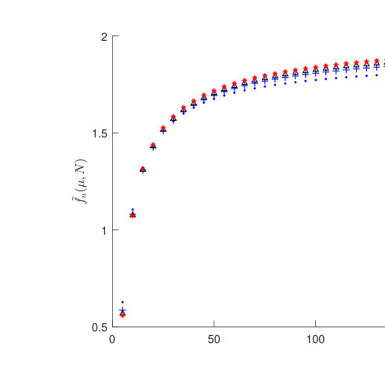
<figcaption class="paper-figure-caption"><b>Fig 3.</b> Figure 3: The zero-mode-projected rescaled function ˜fn(µ, N) plotted as a function of N for µ = 0.001 and different values of n.</figcaption>
</figure>
<figure class="paper-figure-card">

<figcaption class="paper-figure-caption"><b>Fig 4.</b> Figure 4: The rescaled dimensionless function fn(q, µ, N) plotted as a function of q for µ = 0.001, different values of n, and N = 220.</figcaption>
</figure>
<figure class="paper-figure-card">

<figcaption class="paper-figure-caption"><b>Fig 5.</b> Figure 4 shows fn(µ, q, N) for n = 2, 3, 4, 5, with µ = 0.001 and N = 220, as a function of q over the range 80 ≤q ≤180. It is readily apparent that the three curves corresponding to different values of n are well fitted by straight lines with nearly identical slopes. As n</figcaption>
</figure>
</div>

<p><strong>Summary.</strong> This work analyzes the entanglement entropy of an interacting scalar field theory on fuzzy spaces. By calculating the first-order correction from a $\lambda\phi^4$ interaction, the authors show that the interaction introduces an extensive bulk contribution, fundamentally altering the area-law scaling observed in the free theory. The findings connect the divergence structure to the theoretical concept of UV/IR mixing in non-commutative quantum field theories.</p>
<p><strong>Why it may be interesting.</strong> The study of entanglement entropy in non-commutative or geometrically constrained systems like fuzzy spaces provides insights into how background geometry and interactions modify fundamental quantum information measures, which is relevant for understanding quantum field theory in curved or non-commutative spacetimes.</p>
<details>
<summary>Detailed structure</summary>
<p><strong>Main problem.</strong> The paper investigates how self-interactions modify the entanglement entropy of a scalar field theory defined on fuzzy spaces.</p>
<p><strong>Main result.</strong> The interaction correction introduces an extensive bulk contribution to the entanglement entropy, deviating from the area law expected in the free theory.</p>
<p><strong>Method.</strong> The calculation uses a first-order perturbative expansion via the Green's function approach to compute the Rényi entropy correction.</p>
<p><strong>Model / system.</strong> The system is a scalar field theory ($\lambda\phi^4$ interaction) on $(2+1)$-dimensional spacetimes whose spatial sections are modeled by fuzzy spaces (fuzzy sphere and fuzzy disc).</p>
<p><strong>Key observables.</strong> Rényi and entanglement entropies (EE), and the scaling behavior (area law vs. bulk contribution) of the entanglement entropy.</p>
<p><strong>Important parameters / regimes.</strong> The noncommutativity parameter ($   heta$), the coupling constant ($\lambda$), and the size/curvature of the fuzzy space (e.g., $N$ for the fuzzy sphere).</p>
<p><strong>Assumptions / limitations.</strong> The analysis requires projecting out the zero mode for the fuzzy sphere to obtain a physically meaningful result, and the connection to UV/IR mixing is discussed theoretically.</p>
<p><strong>Paper structure.</strong> The paper systematically calculates the free theory EE (showing area law scaling) and then computes the first-order correction due to $\lambda\phi^4$. It analyzes the scaling of this correction in different limits (commutative, Moyal plane) and discusses the physical implications regarding IR divergences and UV/IR mixing.</p>
</details>
<details>
<summary>Abstract</summary>
<p>We investigate the impact of self-interactions on the Rényi and entanglement entropies of a scalar field on $(2+1)$-dimensional spacetimes, whose spatial sections are modeled by fuzzy spaces, specifically the fuzzy sphere and the fuzzy disc. We compute the first-order perturbative correction induced by a $λφ^4$ interaction using the Green's function approach. In contrast to the free theory, where the entanglement entropy is dominated by degrees of freedom near the entangling boundary and obeys an area law, we find that the interaction correction has an extensive bulk contribution, receiving significant contributions from degrees of freedom throughout the fuzzy space. For the fuzzy sphere, the correction exhibits strong infrared sensitivity associated with the zero mode. We isolate and resolve this zero-mode IR divergence by projecting out the zero mode, thereby obtaining a physically meaningful quantity. In the commutative continuum limit, the interaction correction has the same degree of UV divergence as the free entropy but does not obey a pure area law. Furthermore, we analyze the Moyal plane limit, where the interaction correction exhibits a distinct IR divergence. We discuss the physical origin of these extensive bulk features and examine their possible connection to the celebrated UV/IR mixing phenomenon in noncommutative quantum field theories.</p>
</details>
<p><sub><a href="#top">↑ back to top</a></sub></p>

<p><a id="paper-2609.09317"></a></p>
<h3 id="fermionic-quantum-cellular-automata-in-2d-are-trivial"><a href="http://arxiv.org/abs/2609.09317v1">Fermionic quantum cellular automata in 2d are trivial</a></h3>
<p><strong>Authors:</strong> Jeffrey Kwan, David M. Long, Jeongwan Haah<br>
<strong>Type:</strong> theory · <strong>Category:</strong> other · <strong>PDF:</strong> <a href="https://arxiv.org/pdf/2609.09317v1">https://arxiv.org/pdf/2609.09317v1</a><br>
<strong>Analysis basis:</strong> full PDF text, analyzed in chunks
<strong>Topic relevance:</strong> <code>analog quantum simulation</code> <strong>1/5</strong></p>
<div class="figure-strip-hint">↔ Scroll figures horizontally</div>
<div class="paper-figures-scroll">
<figure class="paper-figure-card">
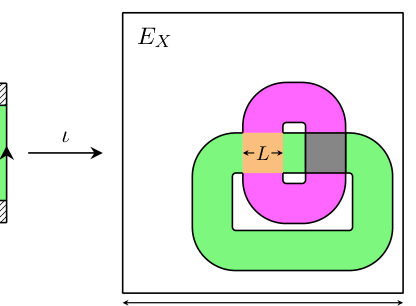
<figcaption class="paper-figure-caption"><b>Fig 1.</b> Figure 1. Immersion of the punctured 2-torus in R2.</figcaption>
</figure>
<figure class="paper-figure-card">
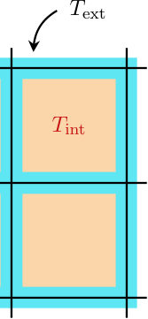
<figcaption class="paper-figure-caption"><b>Fig 2.</b> Figure 2. Copies of [0, 1000ℓ] × [0, 1000ℓ] tiling the plane.</figcaption>
</figure>
<figure class="paper-figure-card">
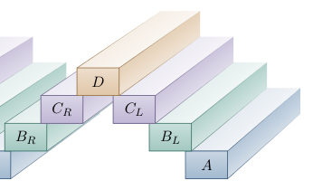
<figcaption class="paper-figure-caption"><b>Fig 3.</b> Figure 3. Ancilla (fermion) removal. Any finite depth circuit of local automor- phisms can be rewritten with 4k layers U1, U2, . . . , U4k, where each Uj is a circuit supported on the union Rj of far separated regions (strips in 2d). Each Rj takes up a fraction at most 1/k of all sites. Any (fermionic) ancilla used by layer ja with ja ∈[1, k] can be borrowed from a nearby ancilla in R2k+1 ∪· · · ∪R3k and immediately returned. Each layer just needs O(1) strips to borrow ancillas from, but we give a big enough pool of ancillas by taking k large. The ancillas used by layers jb ∈[k + 1, 2k] are borrowed from R3k+1 ∪· · · ∪R4k; those used by layers jc ∈[2k + 1, 3k] are from R1 ∪· · · ∪Rk;...</figcaption>
</figure>
<figure class="paper-figure-card">
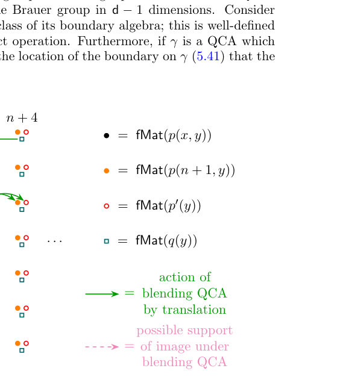
<figcaption class="paper-figure-caption"><b>Fig 4.</b> Figure 4. Blending QCA γ from α on the left with a trivial Brauer boundary algebra B into bilayer shift QCA β = β1 ⊗β2 on the right. The construction is transcription of the following line of thought. The green squares are mapped according to ϕ onto the fermionic commutant A of B, where ϕ is provided by the Brauer triviality. Then, ϕ take up a part of the codomain so any other potential image must live elsewhere. In particular, the on-site algebras at x = n, n + 1 must map out of that region, so we send them out to the right. This incurs cascading surplus and deficit of local algebras, leading to a chain of local shifts, resulting in β1 and β2.</figcaption>
</figure>
<figure class="paper-figure-card">

<figcaption class="paper-figure-caption"><b>Fig 5.</b> Figure 5. The pleating and ironing construction used in 6.10. Any QCA α is equivalent to α ⊗(α−1 ⊗α)⊗n (top panel with n = 2 layers). By removing local automorphisms in the circuit for α ⊗α−1 or α−1 ⊗α, adjacent pairs of layers can be blended to the identity in alternating ways, creating a pleating of α [34]. The red segments indicate positions where the action of the pleated QCA differs from a tensor product of α or α−1. This pleating can then be flattened and compressed (or ironed out), simply by rearranging local algebras in space. The result is a QCA β ◦(α ⊗id), where β is a circuit, such that β ◦(α ⊗id) has a reduced spread along the direction of the pleat.</figcaption>
</figure>
</div>

<p><strong>Summary.</strong> This theoretical paper proves that fermionic Quantum Cellular Automata in two dimensions are mathematically trivial. The authors achieve this by developing deep algebraic tools concerning fermionic operator algebras and applying an inductive proof technique involving geometric manipulations of the QCA structure. The result significantly constrains the possible dynamics of fermionic systems modeled by QCAs.</p>
<p><strong>Why it may be interesting.</strong> The result provides a strong structural constraint on quantum dynamics modeled by local operators, suggesting that in 2D, complex dynamics are highly restricted, which has implications for topological order and quantum computation.</p>
<details>
<summary>Detailed structure</summary>
<p><strong>Main problem.</strong> The paper aims to prove that fermionic Quantum Cellular Automata (QCA) in two dimensions are mathematically trivial.</p>
<p><strong>Main result.</strong> It is proven that every 2-dimensional fermionic QCA on a locally finite-dimensional algebra is merely a composition of local automorphisms and a simple fermionic shift.</p>
<p><strong>Method.</strong> The proof utilizes advanced abstract algebra, specifically analyzing the structure of fermionic invertible subalgebras and employing inductive techniques involving 'hemming,' 'pleating,' and 'ironing' operations.</p>
<p><strong>Model / system.</strong> The model is the Fermionic Quantum Cellular Automaton (QCA), which is mathematically defined as a $*$-automorphism of local fermionic operator algebras ($\mathbb{Z}_2$-graded superalgebras) with bounded spread.</p>
<p><strong>Key observables.</strong> The primary observables are the algebraic structure (e.g., Brauer triviality, central elements) and the dimensionality of the QCA (2D, 3D).</p>
<p><strong>Important parameters / regimes.</strong> Dimensionality (2D, 3D), the initial 'hole radius' ($r_0$), and the spread ($\ell$) of the QCA.</p>
<p><strong>Assumptions / limitations.</strong> The analysis assumes the local algebras are locally finite-dimensional, and the proof relies on the algebraic properties of spectrally nondegenerate fermionic algebras.</p>
<p><strong>Figures summary.</strong> Figure 7 illustrates the iterative process of expanding a QCA with a hole using the techniques of hemming, pleating, and ironing.</p>
<p><strong>Paper structure.</strong> The paper builds from foundational algebraic definitions of fermionic algebras (Chunk 2) to establishing structural theorems for 1D subalgebras, culminating in an inductive proof (Chunk 3) that shows the 2D QCA must be trivial.</p>
</details>
<details>
<summary>Abstract</summary>
<p>Fermionic quantum cellular automata (QCA) are automorphisms of local fermionic operator algebras ($\mathbb Z_2$-graded superalgebras) that have bounded spread: they map local operators to nearby operators. We prove that every 2-dimensional fermionic QCA on a locally finite-dimensional algebra is a composition of local automorphisms and a fermionic shift. This is implied by our result that every locally finite-dimensional fermionic invertible subalgebra in a one-dimensional lattice is Brauer trivial, \textit{i.e.}, it is stably bounded-spread isomorphic to a tensor product fermionic algebra.</p>
</details>
<p><sub><a href="#top">↑ back to top</a></sub></p>

<p><a id="paper-2609.10227"></a></p>
<h3 id="italian-business-to-business-invoicing-data-a-network-analysis"><a href="http://arxiv.org/abs/2609.10227v1">Italian Business-to-Business Invoicing Data: A Network Analysis</a></h3>
<p><strong>Authors:</strong> Valerio Astuti, Daniele Piras<br>
<strong>Type:</strong> theory · <strong>Category:</strong> statistical mechanics · <strong>PDF:</strong> <a href="https://arxiv.org/pdf/2609.10227v1">https://arxiv.org/pdf/2609.10227v1</a><br>
<strong>Analysis basis:</strong> full PDF text, analyzed in chunks
<strong>Topic relevance:</strong> <code>analog quantum simulation</code> <strong>1/5</strong></p>
<div class="figure-strip-hint">↔ Scroll figures horizontally</div>
<div class="paper-figures-scroll">
<figure class="paper-figure-card">
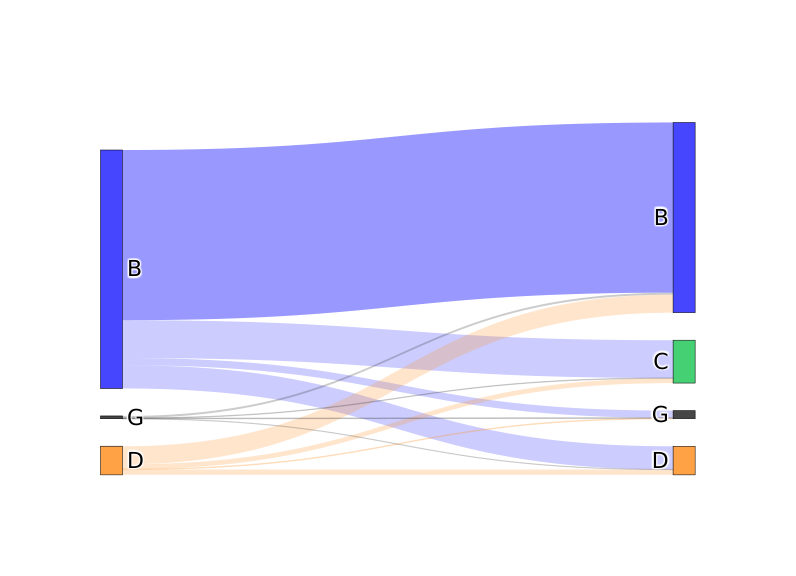
<figcaption class="paper-figure-caption"><b>Fig 1.</b> Figure 1: Flows between categories in terms of aggregated gross transaction amount. Bars’ height represents the total gross transaction amount of invoices by type of entity. Our analysis will focus on the transactions where both the seller and buyer are firms of type B, the flow in darker blue.</figcaption>
</figure>
<figure class="paper-figure-card">

<figcaption class="paper-figure-caption"><b>Fig 2.</b> Figure 2: Number of firms per sector of economic activity. See Appendix F.1 for the full mapping between one-letter and 2-digit sectors. Sector U is the least represented, with fewer than 100 firms in the dataset.</figcaption>
</figure>
<figure class="paper-figure-card">

<figcaption class="paper-figure-caption"><b>Fig 3.</b> Figure 3: Density (upper plot) and mean degree (lower plot) of the networks of transactions within the same sector of economic activity, compared to the value for the whole network (re- ported in orange).</figcaption>
</figure>
<figure class="paper-figure-card">

<figcaption class="paper-figure-caption"><b>Fig 4.</b> Figure 4: Plot of density (left hand side) and mean degree (right hand side) as a function of the number of nodes in the sub-networks of transactions within the same sector of economic activity.</figcaption>
</figure>
<figure class="paper-figure-card">

<figcaption class="paper-figure-caption"><b>Fig 5.</b> Figure 5: Distribution of number of connections (left hand side) and total gross amount of the invoices (right hand side) between sectors.</figcaption>
</figure>
</div>

<p><strong>Summary.</strong> This paper analyzes the structure of the Italian B2B commercial network using electronic invoicing data. By applying network science, it finds the network is scale-free, meaning a few highly connected firms dominate the economy. The study provides detailed insights into the concentration of economic importance across sectors and regions.</p>
<p><strong>Why it may be interesting.</strong> While the subject is economics, the methodology relies heavily on complex network theory, power-law scaling, and structural analysis of connectivity, which shares mathematical parallels with critical phenomena and complex systems studied in statistical mechanics.</p>
<details>
<summary>Detailed structure</summary>
<p><strong>Main problem.</strong> The paper characterizes the structure of the Italian production network by analyzing the B2B commercial relationships derived from electronic invoices.</p>
<p><strong>Main result.</strong> The network exhibits a scale-free structure, indicated by heavy-tailed distributions for buyer/seller counts and centrality, with distinct differences observed between upstream and downstream connections.</p>
<p><strong>Method.</strong> Network analysis techniques are employed, including calculating network metrics (density, mean degree), analyzing degree distributions via power-law fitting, and computing various global centrality measures (e.g., PageRank).</p>
<p><strong>Model / system.</strong> The system is the directed, weighted network of Italian Business-to-Business (B2B) commercial relationships, where firms are nodes and invoices represent weighted, directed links.</p>
<p><strong>Key observables.</strong> Distribution of buyers/sellers per firm, network centrality measures, tail exponents of degree distributions, network density, and mean degree.</p>
<p><strong>Important parameters / regimes.</strong> The analysis is sensitive to the transaction threshold (invoice amount), which dictates the connectivity of the network.</p>
<p><strong>Assumptions / limitations.</strong> The analysis is based on the assumption that the B2B invoicing data provides a comprehensive view of the production system, though the structure is noted to be vulnerable to targeted shocks.</p>
<p><strong>Figures summary.</strong> Figures summarize global centrality measures (by province/sector), the variation of network metrics with transaction thresholds, and the fitting of degree distributions to power laws.</p>
<p><strong>Paper structure.</strong> The paper moves from establishing the data source and general network properties (density, mean degree) to detailed analyses of centrality measures, sector-by-sector and province-by-province breakdowns, and finally, structural analysis based on transaction thresholds.</p>
</details>
<details>
<summary>Abstract</summary>
<p>We present a comprehensive description of the network of Italian Business-to-Business commercial relationships, based on the universe of electronic invoices collected by the Italian Tax Office. The firm-to-firm detail of the data is exploited to describe the distribution of the numbers of buyers (customers) and sellers (suppliers) per firm, the centrality of each firm in the production network, and the average distance between firms. We characterize for the first time the firm-to-firm network describing the Italian production system, and present its geographic and sectoral breakdown. The analysis reveals heavy tailed distributions for the numbers of buyers and sellers per firm, implying a scale-free structure of the network. The distributions of centrality values display heavy tails as well, indicating a strong concentration of importance in a relatively small number of firms. We estimate the tail exponents for all these distributions, finding in all cases lower exponents for downstream (buyer-side) distributions than for the upstream (seller-side) ones.</p>
</details>
<p><sub><a href="#top">↑ back to top</a></sub></p>

<p><a id="paper-2609.09839"></a></p>
<h3 id="minimax-games-for-quantum-channel-discrimination"><a href="http://arxiv.org/abs/2609.09839v1">Minimax games for quantum channel discrimination</a></h3>
<p><strong>Authors:</strong> Kun Fang, Michael X. Cao, Hao-Chung Cheng, Li Gao, Masahito Hayashi<br>
<strong>Type:</strong> theory · <strong>Category:</strong> quantum information and computing · <strong>PDF:</strong> <a href="https://arxiv.org/pdf/2609.09839v1">https://arxiv.org/pdf/2609.09839v1</a><br>
<strong>Analysis basis:</strong> full PDF text, analyzed in chunks
<strong>Topic relevance:</strong> <code>quantum measurements</code> <strong>1/5</strong></p>
<div class="figure-strip-hint">↔ Scroll figures horizontally</div>
<div class="paper-figures-scroll">
<figure class="paper-figure-card">
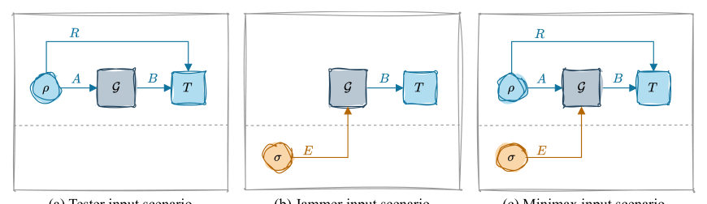
<figcaption class="paper-figure-caption"><b>Fig 1.</b> Figure 1: Tester-input, jammer-input, and minimax-input configurations. The central grey box G denotes the channel under test. Tester systems are shown in blue, and jammer systems in orange. In (a), the tester controls the channel input and final test, while the jammer input is absent. In (b), the jammer controls the channel input, while the tester performs the final test and has no input control. In (c), the tester and jammer control separate channel inputs, and the tester performs the final test.</figcaption>
</figure>
<figure class="paper-figure-card">
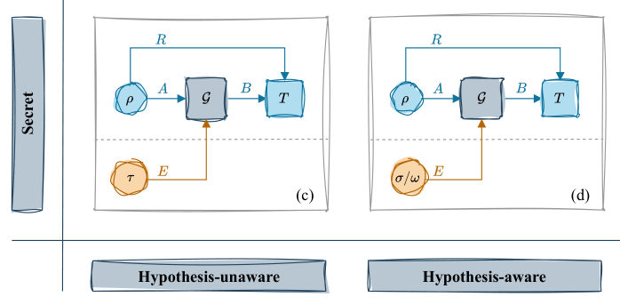
<figcaption class="paper-figure-caption"><b>Fig 2.</b> Figure 2: Four information patterns of the jammer. Rows indicate whether the jammer’s input-selection rule is public or secret, while columns indicate whether the jammer is hypothesis-unaware or hypothesis- aware. In the public row, the dashed orange arrow denotes that the jammer’s rule is disclosed before the tester acts. In the hypothesis-aware column, the jammer may use σ when N is active and ω when M is active; in the hypothesis-unaware column, it must use the same state τ under both hypotheses.</figcaption>
</figure>
<figure class="paper-figure-card">

<figcaption class="paper-figure-caption"><b>Fig 3.</b> Figure 3: Three input structures for n parallel channel uses. The tester’s systems are shown in blue and the jammer’s systems in orange. In (a), both players may prepare entangled inputs. In (b), the tester is restricted to IID inputs, whereas the jammer may still prepare entangled inputs. In (c), both players are restricted to IID inputs. All tests are performed on the tester’s systems and can be entangled.</figcaption>
</figure>
<figure class="paper-figure-card">
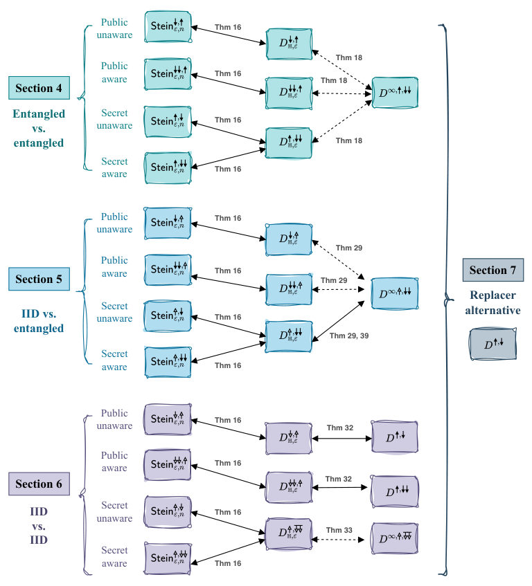
<figcaption class="paper-figure-caption"><b>Fig 4.</b> Figure 4: Summary of the main results. At finite blocklength, the twelve game models reduce to nine hypothesis-testing divergences (Definition 12). Asymptotically, they reduce to five Umegaki relative entropy rates (Definition 14). Solid and dashed connectors indicate strong- and weak-converse results, respectively. For a replacer alternative, all Stein exponents reduce to the same single-letter value.</figcaption>
</figure>
</div>

<p><strong>Summary.</strong> This work establishes a comprehensive game-theoretic framework for quantum channel discrimination, modeling the interaction between a tester and an adversarial jammer. By analyzing twelve distinct game models, the authors derive precise asymptotic limits (Stein exponents) for distinguishing quantum channels. This advances the field by resolving open problems in composite hypothesis testing and providing a general tool for studying competing roles in quantum information tasks.</p>
<p><strong>Why it may be interesting.</strong> The rigorous game-theoretic approach to channel discrimination provides a powerful, general tool for analyzing fundamental limits in quantum resource verification, applicable to any quantum process where adversarial interference is possible.</p>
<details>
<summary>Detailed structure</summary>
<p><strong>Main problem.</strong> The paper develops a comprehensive game-theoretic framework to characterize the fundamental limits of quantum channel discrimination when both the tester and a jammer control separate inputs.</p>
<p><strong>Main result.</strong> It derives exact finite blocklength characterizations and asymptotic Stein exponents for twelve distinct game models, establishing strong converse properties for several previously open problems.</p>
<p><strong>Method.</strong> The authors employ minimax game theory, combining input structures (entangled vs. IID) with information patterns (visibility and hypothesis awareness) to analyze the trade-off between testing and jamming.</p>
<p><strong>Model / system.</strong> The system is quantum channel discrimination between two hypotheses ($N$ and $M$). The model involves a tester and a jammer playing competing roles by controlling separate, potentially correlated, inputs over multiple uses.</p>
<p><strong>Key observables.</strong> Asymptotic Stein exponents, quantum relative entropy divergences ($D(\cdot\|\cdot)$), and error probabilities ($\alpha_T, eta_T$).</p>
<p><strong>Important parameters / regimes.</strong> Blocklength ($n$), error tolerance ($\epsilon$), and the specific structure of the inputs (entangled vs. IID).</p>
<p><strong>Assumptions / limitations.</strong> The analysis relies on establishing minimax identities and developing a general argument to upgrade achievability results to strong converse statements.</p>
<p><strong>Figures summary.</strong> Figure 1 illustrates the three input structures (tester-input, jammer-input, minimax). Figure 2 details the four information patterns based on jammer visibility and hypothesis awareness. Table 1 summarizes the twelve resulting Stein exponents.</p>
<p><strong>Paper structure.</strong> The paper first introduces the general minimax game framework, detailing the twelve possible models based on input structures and information patterns. It then derives the exact finite blocklength characterizations and asymptotic exponents for these models, culminating in the development of a general technique to prove strong converse bounds.</p>
</details>
<details>
<summary>Abstract</summary>
<p>Quantum channel discrimination is a primitive task for identifying, verifying, and benchmarking quantum dynamics. Previous studies have primarily considered either the best-case tester-input setting or the worst-case jammer-input setting. Here, we introduce a game-theoretic framework in which both the tester and jammer control separate inputs. Combining three input structures, characterized by whether the tester and jammer use entangled inputs or IID inputs across channel uses, with four information patterns, determined by the visibility of the jammer's strategy and its knowledge of the true hypothesis, yields twelve game models. We provide exact finite blocklength hypothesis testing characterizations of all twelve models in terms of nine minimax hypothesis testing divergences and derive their asymptotic Stein exponents. Notably, for entangled jammers, neither the visibility of the jammer's strategy nor its knowledge of the true hypothesis affects the asymptotic Stein exponent, whereas the information pattern remains consequential for IID jammers. As an example, we study the discrimination of a general channel from a replacer channel and show that all asymptotic Stein exponents coincide with the same additive, single letter quantity. We further develop a general argument that upgrades achievability results to strong converse results, thereby establishing strong converse properties for several game models, resolving an open problem in composite hypothesis testing posed by Berta et al. [Commun. Math. Phys. 385, 55 (2021)], and strengthening several recent results of Lami [arXiv:2510.06340]. The framework and techniques developed here may support future studies of quantum information tasks involving competing roles.</p>
</details>
<p><sub><a href="#top">↑ back to top</a></sub></p>

<p><a id="paper-2609.09613"></a></p>
<h3 id="probing-quantum-chaos-near-a-wormhole-throat-with-a-circular-string"><a href="http://arxiv.org/abs/2609.09613v1">Probing quantum chaos near a wormhole throat with a circular string</a></h3>
<p><strong>Authors:</strong> Ai-chen Li, Xin-Fei Li, Xuanting Ji<br>
<strong>Type:</strong> theory · <strong>Category:</strong> other · <strong>PDF:</strong> <a href="https://arxiv.org/pdf/2609.09613v1">https://arxiv.org/pdf/2609.09613v1</a><br>
<strong>Analysis basis:</strong> full PDF text, analyzed in chunks
<strong>Topic relevance:</strong> <code>Keldysh / 2PI / non-Gaussian methods</code> <strong>1/5</strong></p>
<div class="figure-strip-hint">↔ Scroll figures horizontally</div>
<div class="paper-figures-scroll">
<figure class="paper-figure-card">
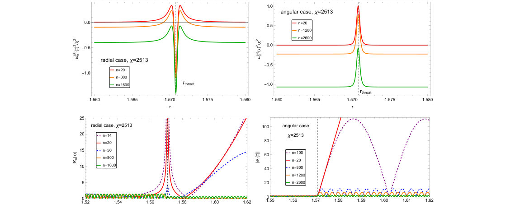
<figcaption class="paper-figure-caption"><b>Fig 1.</b> Figure 1: Effective frequency profiles and the corresponding mode-function response for the Ellis-Bronnikov wormhole. The upper panels show the time dependence of ω(R) n (τ)2</figcaption>
</figure>
<figure class="paper-figure-card">

<figcaption class="paper-figure-caption"><b>Fig 2.</b> Figure 2: Representative OTOC amplitudes for the Ellis-Bronnikov wormhole, computed from (3.36) and (3.37). The numerical parameters are the same as those used in Fig. 1. The shaded intervals indicate the growth windows used to fit the logarithm of the unequal-time commutator, and the short black dashed segments show the corresponding linear fits. The black vertical dashed lines mark the world-sheet times τthroat = (2k + 1)π/2 at which the probe string reaches the wormhole throat, whereas the red vertical dash-dotted lines mark the times τturning = kπ at which its radial velocity vanishes at the distant turning points, with k ∈Z.</figcaption>
</figure>
<figure class="paper-figure-card">

<figcaption class="paper-figure-caption"><b>Fig 3.</b> Figure 3: Dimensionless physical-time Lyapunov rate r0λt as a function of the throat parameter χ = κ2E/r0 for the Ellis-Bronnikov wormhole. The upper and lower panels show the radial and angular fluctuation channels, respectively. For each value of χ, the OTOC amplitude is evolved as in Fig. 2, and the world-sheet Lyapunov exponent λτ is extracted from the first growth window associated with the initial passage through the throat. Since t = κ2Eτ + t0, the Lyapunov exponent defined with respect to the physical time is λt = λτ/(κ2E). In natural units λt has dimensions of inverse time, or equivalently energy, so multiplication by r0 gives the dimensionless combination r0λt = λτ/χ. This...</figcaption>
</figure>
<figure class="paper-figure-card">

<figcaption class="paper-figure-caption"><b>Fig 4.</b> Figure 4: Dimensionless physical-time Lyapunov rate r0λt as a function of χ = κ2E/r0 for the global-monopole wormhole. The upper and lower panels show the radial and an- gular fluctuation channels, respectively, while the different curves display the effect of the topological defect through representative values of α0 = p</figcaption>
</figure>
<figure class="paper-figure-card">
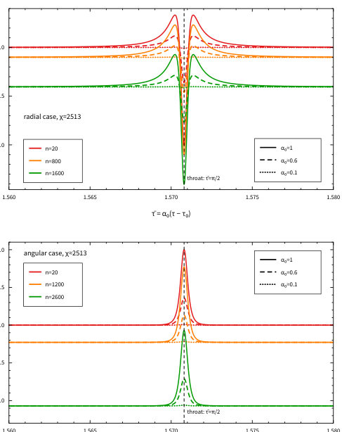
<figcaption class="paper-figure-caption"><b>Fig 5.</b> Figure 5: Dependence of the time-dependent effective frequency profiles on the deficit factor α0 for the global-monopole wormhole. The upper and lower panels show ω(R) n (τ)2/χ2</figcaption>
</figure>
</div>

<p><strong>Summary.</strong> This theoretical paper examines quantum chaos by analyzing the OTOC growth of a probe string traversing a wormhole throat. Using a quadratic approximation of the world-sheet action, the authors demonstrate that even when classical motion is stable, quantum fluctuations can exhibit finite-time exponential growth. This provides a transferable diagnostic tool for studying quantum dynamics in curved, non-black-hole spacetimes.</p>
<p><strong>Why it may be interesting.</strong> The methodology provides a non-holographic, covariant framework to apply quantum chaos diagnostics (OTOCs) to quantum probes in curved spacetimes, offering insights into information scrambling in regular, horizonless settings.</p>
<details>
<summary>Detailed structure</summary>
<p><strong>Main problem.</strong> The study investigates whether quantum fluctuations of a circular probe string develop a quantum-chaotic response while traversing a wormhole throat, despite the classical motion being stable.</p>
<p><strong>Main result.</strong> Finite-time Out-of-Time-Ordered Correlator (OTOC) growth, indicative of local dynamical sensitivity, was observed for both polarizations near the wormhole throat. This growth is suppressed by increasing the solid-angle deficit in the global-monopole extension.</p>
<p><strong>Method.</strong> The authors canonically quantized the transverse fluctuations of the string by expanding the world-sheet action to quadratic order and constructing OTOC amplitudes from unequal-time commutators.</p>
<p><strong>Model / system.</strong> The system involves a circular probe string moving through traversable wormholes, specifically the Ellis–Bronnikov and global-monopole geometries. The analysis focuses on the quantum fluctuations of the string embedded in the curved spacetime.</p>
<p><strong>Key observables.</strong> Out-of-Time-Ordered Correlator (OTOC) amplitudes and the corresponding dimensionless physical-time growth rate.</p>
<p><strong>Important parameters / regimes.</strong> The solid-angle deficit ($\alpha_0$) and the ratio of probe energy to the throat scale ($\chi = \kappa^2 E/r_0$).</p>
<p><strong>Assumptions / limitations.</strong> The analysis is restricted to the quadratic approximation of the world-sheet action and characterizes finite-time sensitivity, not asymptotic many-body chaos.</p>
<p><strong>Figures summary.</strong> Figures illustrate the finite intervals of exponential OTOC growth associated with the first throat passage and show how the solid-angle deficit tunes the magnitude of these growth rates across different polarizations.</p>
<p><strong>Paper structure.</strong> The paper follows a progression from deriving classical dynamics, to quantizing the fluctuations via the quadratic action, and finally performing numerical analysis on specific wormhole geometries to extract the OTOC signatures.</p>
</details>
<details>
<summary>Abstract</summary>
<p>We investigate whether quantum fluctuations of a circular probe string develop a quantum-chaotic response while traversing a wormhole throat. The classical circular-string embedding is periodic and radially stable, but its two physical transverse polarizations experience time-dependent tidal potentials. Expanding the world-sheet action to quadratic order, we canonically quantize these modes and construct out-of-time-ordered correlator(OTOC) amplitudes from their unequal-time commutators. For the Ellis--Bronnikov wormhole, both polarizations exhibit finite intervals of approximately exponential OTOC growth associated with the first throat passage. The corresponding dimensionless rate measured with respect to physical time is positive over the parameter range studied and generally decreases as the probe energy is increased relative to the throat scale. In the global-monopole extension, increasing the solid-angle deficit narrows the band of locally amplifiable modes and suppresses the extracted rates; a sufficiently strong defect can nearly quench the radial signal, while the angular channel retains a polarization-dependent non-monotonic structure when the energy-to-throat-scale ratio is small. These quantities characterize finite-time dynamical sensitivity in the Gaussian fluctuation sector and should not be identified with asymptotic many-body chaos or a thermodynamic phase transition. Although the numerical analysis uses two representative wormhole geometries, the construction depends only on covariant world-sheet fluctuations and real-time commutators. It therefore provides a transferable, non-holographic framework for applying quantum-chaos diagnostics directly to quantum probes in curved spacetimes.</p>
</details>
<p><sub><a href="#top">↑ back to top</a></sub></p>

<p><a id="paper-2609.10505"></a></p>
<h3 id="quantum-feature-engineering-for-credit-default-prediction-when-and-why-iqp-circuits-help-linear-classifiers"><a href="http://arxiv.org/abs/2609.10505v1">Quantum Feature Engineering for Credit Default Prediction: When and Why IQP Circuits Help Linear Classifiers</a></h3>
<p><strong>Authors:</strong> Menachem Finkelstein, Diana Legziel Levy, Zohar Yakhini, Sarel Cohen<br>
<strong>Type:</strong> theory · <strong>Category:</strong> quantum information and computing · <strong>PDF:</strong> <a href="https://arxiv.org/pdf/2609.10505v1">https://arxiv.org/pdf/2609.10505v1</a><br>
<strong>Analysis basis:</strong> full PDF text, analyzed in chunks
<strong>Topic relevance:</strong> <code>quantum measurements</code> <strong>1/5</strong></p>
<div class="figure-strip-hint">↔ Scroll figures horizontally</div>
<div class="paper-figures-scroll">
<figure class="paper-figure-card">
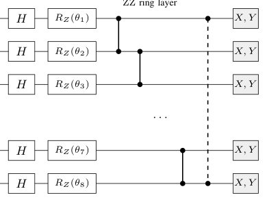
<figcaption class="paper-figure-caption"><b>Fig 1.</b> Fig. 1. The 8-qubit IQP feature extractor (five of the eight wires shown; qubits 4–6 and the couplings (3, 4) . . . (6, 7) are elided). Left to right: a Hadamard superposition layer, an RZ(θi) data-encoding layer, and an ISINGZZ entanglement layer. Each qubit is then measured in the Pauli X and Y bases, producing 2n = 16 output features; that transverse read-out plays the role of the canonical IQP form’s closing basis change, and is why ⟨Z⟩is identically zero and excluded. Topology: the ZZ couplings form a ring on the 8 qubits—exactly the 8 edges (1, 2), (2, 3), . . . , (7, 8), (8, 1), each applied at its own time step. The dashed line is the wrap-around edge (8, 1) that closes the ring; it...</figcaption>
</figure>
</div>

<p><strong>Summary.</strong> This work explores using quantum circuits to generate enhanced features for credit default prediction. By mapping classical data through an 8-qubit IQP circuit, the authors generated 16 features that significantly boosted a linear classifier's performance over the best classical alternatives. This suggests that quantum feature mapping can provide a measurable advantage in structured data classification tasks.</p>
<p><strong>Why it may be interesting.</strong> It demonstrates a concrete, application-driven use case for quantum feature mapping, showing how quantum circuits can potentially enhance classical machine learning models by accessing complex correlations inaccessible to standard classical feature engineering.</p>
<details>
<summary>Detailed structure</summary>
<p><strong>Main problem.</strong> The paper investigates whether quantum feature engineering using IQP circuits can significantly improve the performance of linear classifiers for credit default prediction compared to classical methods.</p>
<p><strong>Main result.</strong> Appending 16 quantum features derived from an 8-qubit IQP circuit raised the F1 score of a Logistic Regression model from 0.462 to 0.517, outperforming Kernel PCA and surviving rigorous statistical correction.</p>
<p><strong>Method.</strong> The authors encode classical financial attributes as rotation angles and map them through an $n$-qubit IQP circuit to generate $2n$ expectation value features, which are then used as input to a linear classifier.</p>
<p><strong>Model / system.</strong> The model utilizes an $n$-qubit IQP circuit (Hadamard $
ightarrow R_Z(  heta_i) 
ightarrow ZZ$ ring entanglement) to map classical data into a high-dimensional quantum feature space. The output features are the expectation values of Pauli X and Y observables.</p>
<p><strong>Key observables.</strong> F1 score, expectation values $\langle X_i 
angle$ and $\langle Y_i 
angle$, and the statistical significance (p-values) of the performance gains.</p>
<p><strong>Important parameters / regimes.</strong> Number of qubits ($n=8$), number of features ($2n=16$), and the feature budget constraint used for comparison.</p>
<p><strong>Assumptions / limitations.</strong> The comparison is performed on a classical simulator, and the quantum advantage is argued to be specific to the linear-expressivity mechanism of the classifier.</p>
<p><strong>Figures summary.</strong> Figure 1 illustrates the 8-qubit IQP feature extractor sequence: Hadamard superposition, $R_Z(	heta_i)$ data-encoding, and $ZZ$ ring entanglement layer, followed by measurement in X and Y bases.</p>
<p><strong>Paper structure.</strong> The paper establishes the problem (credit default prediction), details the quantum feature extraction method using IQP circuits, compares the resulting features against classical alternatives (KPCA, PCA), and analyzes the statistical significance of the performance gains using multiple testing corrections.</p>
</details>
<details>
<summary>Abstract</summary>
<p>Credit default prediction is a tabular classification problem in which modest gains in F1 translate directly into reduced financial exposure. We ask whether Instantaneous Quantum Polynomial-time (IQP) circuits can produce features that improve a classifier over both its raw classical baseline and Kernel PCA - the strongest unsupervised classical non-linear alternative - at an equal feature budget. The dataset provides 23 financial attributes per client; for an n-qubit circuit we select n of them, encode each as a rotation angle, and read 2n expectation values back out as new features. The motivation for using a quantum circuit is computational: an n-qubit IQP circuit runs in constant depth and encodes feature correlations in a 2^n-dimensional Hilbert space, whereas classical simulation of its exact output statistics scales exponentially in n. Using the UCI Default of Credit Card Clients dataset and five-fold cross-validation, we find that appending 16 IQP features (n = 8 qubits) to a Logistic Regression model raises F1 from 0.462 to 0.517 (+0.055, p &lt; 0.0001). Kernel PCA, the next-best method, reaches only 0.493 at the same feature count; the gap survives Benjamini-Hochberg correction across 12 tests (p = 0.00007). No other classifier - Random Forest, SVM, XGBoost, or k-NN - benefits, which points to a linear-expressivity mechanism rather than a generic improvement. We also show that how the 8 input features are chosen matters: Random Forest importance-guided selection reaches F1 = 0.523, while encoding maximally uncorrelated features drops it to 0.496, demonstrating that the circuit amplifies informative structure rather than creating it from scratch.</p>
</details>
<p><sub><a href="#top">↑ back to top</a></sub></p>
<hr>
<p>
<a href="index.html">← Index</a>
 · <a href="papers_04.html">← Previous</a> · <a href="papers_06.html">Next →</a>
</p>
<hr>

</body>
</html>
